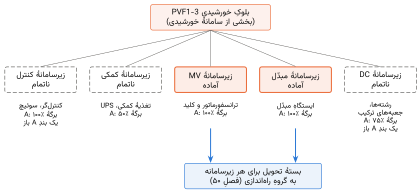
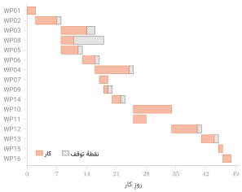
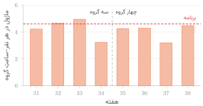
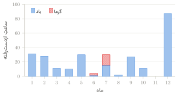
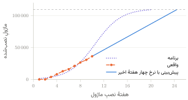
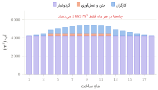

49 اجرا و نصب
49.1 نقشهٔ فصل
پس از این فصل، خواننده میتواند:
- آمادگیِ یک بستهٔ کار را پیش از صدور بسنجد: مجوزها و تأییدها، روشنامهٔ اجرا، صلاحیتِ گروهِ کاری، نقشههای صادرشده برای اجرا، آمادگیِ امداد و آموزشِ بدوِ ورود.
- سابقههای نصب را با رواداریهایشان بخوانَد: جای پایهها، گشتاور و ابزارش، طولِ چونساختِ کابل، پایانهبندیِ فشارِ متوسط، پیوستگیِ زمین و حفاظتِ انباری.
- نیروگاه را به سامانه و زیرسامانه بشکند، تکمیلِ مکانیکی را برای هر زیرسامانه تعیین کند و بستهٔ تحویل به راهاندازی را جمع کند.
- بستههای کارِ یک بلوکِ خورشیدی را با گروههای کاری و نقطههای توقف زمانبندی کند و آنچه پایانِ کار را میرانَد پیدا کند.
- پروژه را در ساختگاه کنترل کند: برنامهٔ پیشنگر و قیدهایش، بهرهوری، ساعتهای ازدسترفته به باد و گرما، برنامهٔ جبران و تداخلِ پیمانکارانِ جزء.
- رشتههای دیگرِ ساخت را با سابقههایشان پیش ببرد: سامانههای کمکی، کیفیتِ ساختِ سامانهٔ آتش، آبِ ساخت، خطِ صادرات و کابلِ جمعآوری، و برنامهٔ اجتماعیِ تأییدشده.
- دادهٔ داراییها را در دریافت، نصب، آزمون و تحویل ثبت کند و با دفترِ طراحی آشتی دهد.
پیشنیازها: مهندسیِ عمران و آب (فصل 29)، حمل و لجستیک (فصل 31)، ایمنی، آتش و اضطرار (فصل 32) و طراحیِ تفصیلی و مدیریتِ اطلاعات (فصل 38).
- نقطهٔ توقف با نقطهٔ شاهد چه فرقی دارد؟
- چرا «تعدادِ ماژولهای نصبشده» پیشرفتِ کار را بیش از واقع نشان میدهد؟
- چرا نقشهای با وضعیتِ «صادرشده برای تأیید» برای ساخت کافی نیست؟
- چرا آموزشِ بدوِ ورود در دروازهٔ ساختگاه وارسی میشود؟
پاسخها: (۱) نقطهٔ توقف کار را تا آزادسازیِ بازرس نگه میدارد و شاهد فقط خبر میگیرد؛ (۲) گامهای پس از نصب، گشتاور و بازرسی، در آن نیستند؛ (۳) بازنگریِ آن هنوز میتواند تغییر کند؛ (۴) چون شمارشِ تجمع و امداد به فهرستِ دروازه تکیه دارد. اگر دو پرسش یا بیشتر را نتوانستید، بخش 47.4.12، بخش 38.2.2، بخش 32.2.5 و بخش 32.2.4 را مرور کنید.
جایگاهِ این فصل در نیروگاهِ P. فصلهای ۴۰ تا ۴۸ محصولها را در کارخانه ساختند و پذیرفتند. این فصل آنها را در ساختگاه نصب میکند، با یک پیمانکارِ ساختگیِ طراحی، تأمین و ساخت و پیمانکارانِ جزءِ ساختگی (A-506 تا A-513). روزِ مرجعِ سابقهها ماهِ نهم از ساختِ هجدهماهه است، اوجِ نیروی کار در منحنیِ فصلِ ۲۲. محصولِ اصلیِ فصل بلوکِ خورشیدیِ =PVF1-3 است: ۲۱ جعبهٔ ترکیب، ۴۲۰ رشته، 10,920 ماژول روی ۲۱۰ میز و 2,520 پایه، با یک ایستگاهِ مبدّل از فصلِ ۴۰. فصلهای ۲۲، ۲۹، ۳۱، ۳۲ و ۳۳ برنامهٔ توسعه، آب، حمل، ایمنی و برنامهٔ اجتماعی را دادند و فصلِ ۳۸ اطلاعات و ارزشِ کسبشده را. این فصل اینها را به سابقههای ساختگاه میبرد. همه با تصمیمِ D-053 جمع میشوند.
پیمانکاران، افراد، دادهها و عیبها ساختگیاند و حدها آموزشی. این فصل سابقهها را میخوانَد و نسخهٔ اجرایی نمیدهد. مقدارِ گشتاور، طرحِ اختلاطِ بتن، زمانِ عملآوری و روشِ پایانهبندی را سازنده و طراحِ صلاحیتدار میدهند. هیچ کارِ برقدار و هیچ آزمونِ زیرِ ولتاژی آموزش داده نمیشود: هر کار با سامانهٔ مجوزِ کار و به دستِ افرادِ صلاحیتدار است (بخش 32.2.4). چیدمانِ سامانهٔ آتش را طرحِ تأییدشده و مقامِ مسئول تعیین میکنند. جزئیاتِ امنیتیِ ساختگاه در این کتاب نمیآید. تعهدهای اجتماعی فقط همانهاییاند که در برنامهٔ تأییدشده و با بودجه آمدهاند.
49.2 الف. آمادگیِ ساخت
ساخت در ساختگاه با بیل آغاز نمیشود. پیش از آن تجهیزِ کارگاه (به انگلیسی mobilisation) است: راههای دسترسی، انبار و فضای انبار، کارگاهِ موقت، آب، برق، اقامتگاه و نقطهٔ امداد. اینها کارهای موقتاند و مانندِ کارِ دائم طرح و بازرسی میخواهند. سپس هر بستهٔ کار (بخش 1.3.5، بخش 31.6) پیش از صدور به گروهِ کاری از یک دروازهٔ آمادگی میگذرد. شش پرسش دارد:
- مجوزها و تأییدها: آیا تأییدِ مقامها برای این جبههٔ کار رسیده است (بخش 22.6.4، بخش 33.2.13)؟
- روشنامهٔ اجرا: آیا روشِ کار نوشته، بازبینی و تأیید شده است، با خطرها و کنترلهایش (بخش 32.2)؟
- صلاحیت: آیا هر نقشِ لازم در گروه نام دارد و گواهیِ آن معتبر است (بخش 32.2.5)؟
- نقشهها: آیا هر نقشهای که بسته به آن تکیه دارد «صادرشده برای اجرا» است (بخش 38.2.2)؟
- پیشنیازها: آیا بستههای پیشین آزاد شدهاند، با نقطههای توقفشان؟
- امداد: آیا گروهِ امداد در زمانِ هدف به این جبهه میرسد (بخشِ «ر»)؟
پاسخِ هر شش از یک سابقه میآید، نه از گفتوگو. درسهای این بخش هر کدام یکی از این سابقهها را میخوانند.
def permits() -> list:
rows = []
for name, front, need, got in src.PERMITS:
late = None if got is None else got - need
rows.append((name, front, need, got, late))
return rows49.2.1 دفترِ تأییدها در برابرِ جبهههای کار
ایده. هر تأیید روزی دارد که جبههاش به آن نیاز پیدا میکند. دفترِ تأییدها این روز را با روزِ صدور مقایسه میکند.
approvals register against the day each front needs them
approval needed granted late days
building permit, substation building 40 31 0
water abstraction, wells W-1/W-2 10 12 +2
road crossing, regional road (MV duct) 120 open -
wadi works consent 60 75 +15
abnormal loads, turbine convoy 150 140 0
temporary diesel store 15 9 0
ruin buffer works (ch 33) 90 open -
4 of 7 late or open: the wadi consent held the access road
15 days; the road crossing and the ruin-buffer works have
no approval yet - their fronts are planned around them, not
started in hope (ch 22 permit register, ch 33 ruin buffer)مثال 49.1 (پانزده روز برای یک رضایتنامه) پرسش. کدام تأییدها دیر رسیدهاند یا هنوز نرسیدهاند و اثرشان چیست؟
پاسخ. چهار از هفت. آبِ چاهها دو روز و رضایتنامهٔ کار در بسترِ آبراهه پانزده روز دیر رسید. گذرگاهِ جادهٔ منطقهای و کار در حریمِ ویرانهٔ تاریخی هنوز تأیید ندارند.
تفسیر. دو موردِ باز در برنامه دور زده میشوند و جبههشان به امید آغاز نمیشود. این همان دفترِ مجوزهای فصلِ ۲۲ است که حالا روزِ نیاز را هم دارد.
49.2.2 روشنامهٔ اجرا برای هر فعالیت
ایده. روشنامهٔ اجرا (به انگلیسی method statement) میگوید کار چگونه، با چه ابزار و چه کسانی و با کدام کنترلها انجام میشود. کار فقط با روشنامهٔ تأییدشده آغاز میشود.
method statements by activity: work starts only on an approved one
piling MS-07 approved
table assembly MS-08 approved
module mounting MS-09 approved
trenching MS-05 approved
MV terminations MS-14 returned with comments
station placement (crane) MS-12 approved
DC terminations MS-13 approved
string wiring none not written
earthing MS-15 submitted
3 activities cannot start: string wiring has none, MV
terminations went back with comments, earthing waits for
review - each is on the block's critical path (lesson D)مثال 49.2 (سه فعالیتِ بیروشنامه) پرسش. کدام فعالیتها نمیتوانند آغاز شوند؟
پاسخ. رشتهکشی که روشنامه ندارد، پایانهبندیِ فشارِ متوسط که با ملاحظات برگشته و زمینکردن که در بازبینی است.
تفسیر. هر سه روی مسیرِ بحرانیِ بلوکاند (بخشِ «ت»). روشنامهای که دیر نوشته شود، گروهی را بیکار نگه میدارد. روشنامهای که نوشته نشود، گروهی را بیکنترل به کار میفرستد.
49.2.3 صلاحیتِ گروههای کاری
ایده. هر گروهِ کاری نقشهایی دارد که باید نام و گواهیِ معتبر داشته باشند: مفصلبندِ آموزشدیدهٔ سازنده، اپراتورِ جرثقیل، سرپرستِ بالابری، امدادگر. فهرستِ گروه در روزِ کار با تاریخِ اعتبارِ گواهیها سنجیده میشود.
crew competence on 2027-09-01 (certificates and named roles)
expired: jointer - MV jointer (maker-trained) (J. Rahimi, 2027-07-30)
expires within 45 days: electrical - first aider (A. Moradi, 2027-10-01)
role not filled: crane - lift supervisor
role not filled: modules - first aider
the jointing crew cannot terminate MV cables until the
jointer's maker training is renewed; the crane crew has no
lift supervisor, so no planned lift goes ahead; the module
crew works without a named first aider - each is a stop,
not a note (ch 32 competency)مثال 49.3 (مفصلبندی با گواهیِ گذشته) پرسش. کدام نقشها کار را متوقف میکنند؟
پاسخ. گواهیِ مفصلبند از 2027-07-30 گذشته است. گروهِ جرثقیل سرپرستِ بالابری ندارد. گروهِ ماژول امدادگرِ نامدار ندارد. گواهیِ امدادگرِ گروهِ برق در کمتر از ۴۵ روز میگذرد.
تفسیر. هر کدام توقف است، نه یادداشت. هیچ بالابریِ برنامهریزیشدهای بی سرپرست انجام نمیشود (بخش 31.5.3). پایانهبندی با مفصلبندِ بیگواهی کیفیتی است که هیچ آزمونی بعداً ثابت نمیکند.
49.2.4 نقشهها برای اجرا
ایده. فصلِ ۳۸ وضعیتهای سند را تعریف کرد (بخش 38.2.2). فقط نقشهٔ صادرشده برای اجرا (IFC) به ساختگاه میرود.
drawings each package needs, by status (ch 38 statuses)
WP03 piling PLP-CIV-DWG-0011 C02 IFC
WP04 tables PLP-CIV-DWG-0012 C01 IFC
WP06 cables in trench PLP-ELE-DWG-0021 B03 IFA - not for construction
WP06 cables in trench PLP-ELE-LST-0012 C01 IFC
WP08 station base PLP-CIV-DWG-0014 C02 IFC
WP13 DC terminations PLP-ELE-DWG-0022 C01 IFC
WP14 MV terminations PLP-ELE-DWG-0023 B02 IFR - not for construction
2 packages wait for a drawing issued for construction:
building from a drawing 'issued for approval' is building a
revision that may still changeمثال 49.4 (ساختن از بازنگریای که هنوز تغییر میکند) پرسش. کدام بستهها منتظرِ نقشهاند؟
پاسخ. کابلها در ترانشه با نقشهٔ B03 در وضعیتِ IFA و پایانهبندیِ فشارِ متوسط با B02 در وضعیتِ IFR.
تفسیر. ساختن از نقشهٔ «برای تأیید» یعنی ساختنِ بازنگریای که شاید تغییر کند. هزینهٔ تغییر پس از ساخت چند برابرِ هزینهٔ آن پیش از ساخت است (بخش 38.6).
49.2.5 رفاهِ کارگاه در اوجِ نیروی کار
ایده. کارهای موقت برای اوج اندازه میشوند و پیش از اوج ساخته میشوند. منحنیِ نیروی کارِ فصلِ ۲۲ و 70 L در روز برای هر نفر از فصلِ ۳۲ پایهٔ این اندازهاند.
welfare at the workforce peak (ch 22 curve, ch 32 70 L a day)
peak 450 workers in month 9; worker-months 4,534
toilets at 1 per 15: 30; water 31.5 m3 a day
beds for workers from outside (60%): 270
temporary facilities are sized for the peak and built before
it: a camp that fills in month 9 is planned in month 2مثال 49.5 (اقامتگاهی که در ماهِ دوم برنامهریزی میشود) پرسش. در اوج چند سرویسِ بهداشتی، چه مقدار آب و چند تخت لازم است؟
پاسخ. اوجِ ۴۵۰ نفر در ماهِ نهم: ۳۰ سرویس با یکی برای هر ۱۵ نفر، 31.5 m³ آب در روز و ۲۷۰ تخت برای ۶۰٪ کارگرانی که از بیرون میآیند.
تفسیر. اقامتگاهی که در ماهِ نهم پر میشود در ماهِ دوم طرح میشود. نسبتها آموزشیاند و برنامهٔ تأییدشدهٔ رفاهِ کارگران و مقامها آنها را تعیین میکنند (بخش 33.3.9.2).
49.2.6 موجودیِ ماژول و فضای انبار
ایده. ماژولها با پالت میرسند. هر روز موجودیِ بیشتر یعنی فضای انبارِ بیشتر و حفاظتِ انباریِ بیشتر. فضای انبار با راهروها از تابعِ فصلِ ۳۱ حساب میشود (بخش 31.6).
modules of block PVF1-3: 10,920 on 304 pallets of 36; mounting 1,200 a day
(34 pallets a day, about 1.5 trucks)
stock held pallets laydown m2 (with aisles)
1 d 34 141
3 d 100 416
7 d 234 973
10 d 304 1,265
the whole block at once needs 1,265 m2 of laydown, 3 times
the three-day stock, and preservation for every pallet
until it is mounted; three days of stock keeps the crews fed
through one late truck - the buffer is set from the delivery
reliability, not habitمثال 49.6 (سه روز، نه ده روز) پرسش. موجودیِ سهروزه و کلِ بلوک چه فضایی میخواهند؟
پاسخ. سه روز: ۱۰۰ پالت و 416 m². کلِ بلوک یکجا: ۳۰۴ پالت و 1,265 m²، سه برابر.
تفسیر. موجودیِ سهروزه گروهها را از یک کامیونِ دیررسیده نگه میدارد. موجودیِ بیشتر هزینهٔ انبار، حفاظت و خطرِ آسیب دارد. اندازهٔ موجودی از قابلیتِ اطمینانِ تحویلها میآید، نه از عادت.
- شش پرسشِ دروازهٔ آمادگی را نام ببرید.
- چرا تأییدِ دیررسیده باید در برنامه دیده شود، نه فقط در دفتر؟
- روشنامهٔ «با ملاحظات برگشته» چه وضعی برای کار دارد؟
- چرا گواهیِ گذشتهٔ مفصلبند توقف است؟
- نقشهٔ IFA با IFC چه فرقی دارد؟
- کارهای موقت برای چه لحظهای اندازه میشوند؟
- چرا پاسخِ هر پرسشِ آمادگی باید از یک سابقه بیاید؟
- امدادگرِ گروهی که گواهیاش در ماهِ آینده میگذرد چه اقدامی میخواهد؟
49.3 ب. اجرا در جبههٔ کار
کارخانه شرایطِ کنترلشده دارد: دما، نور، ابزارِ ثابت، بازرسِ همیشه حاضر. ساختگاه هیچکدام را ندارد. پس هر وارسیای که از کارخانه به ساختگاه میآید، باید سابقهای داشته باشد که همان را ثابت کند. جدولِ زیر نشان میدهد کدام وارسی کجا انجام میشود.
| محصول | در کارخانه ثابت شد | در ساختگاه ثابت میشود |
|---|---|---|
| پایه و میزِ ماژول | فولاد، گالوانیزه، ابعاد (بخش 47.4.4) | جای پایه، عمقِ کوبش، گشتاورِ گیرهها، همراستایی |
| ماژول | توان، تصویرِ الکترولومینسانس (بخش 41.5) | آسیبِ حمل، شمارهٔ سریال، اتصالدهندهها |
| ایستگاهِ مبدّل | آزمونِ کارخانه (بخش 40.5) | مهار روی پی، حفاظتِ انباری، پایانهبندی |
| کابل | آزمونهای جاری (بخش 46.2) | طولِ چونساخت، شعاعِ خم، پایانهبندی، پیوستگیِ زمین |
| تابلو و شبکه | وارسیِ نقطه به نقطه (بخش 48.3) | اتصالها، برچسبها، وارسیِ حلقه |
حفاظت در برابرِ آسیبِ ساخت هم بخشی از کار است. کابلِ خواباندهشده زیرِ چرخِ ماشینها، ماژولِ نصبشده کنارِ گردوغبارِ خاکبرداری و پایانهٔ باز در باران همه از کیفیتِ کارخانه چیزی کم میکنند. ترتیبِ بستهها (بخشِ «ت») و جداکردنِ محدودهها (بخشِ «ث») ابزارهای این حفاظتاند.
49.3.1 جای پایهها و عمقِ کوبش
ایده. هر پایه دو عدد دارد: خطای جا در صفحه و عمقِ کوبش. خطای جا برآیندِ دو مؤلفه است: \(e = \sqrt{\Delta x^2 + \Delta y^2}\). پایهای که پیش از عمقِ طراحی متوقف شود، کوتاه است.
post records of a sample of 12 in block PVF1-3
(tolerance 30 mm radial, teaching)
P3-006: off by 42 mm
P3-012: off by 36 mm
P3-004: embedded 1.98 m of 2.00 m - short
P3-007: embedded 1.71 m of 2.00 m - short
an off-position post is checked against the table's slotted
holes before the table goes on; a short post is the
designer's decision (a load test or a second post), never
the crew's - both are non-conformities with a dispositionمثال 49.7 (دو پایهٔ بیرون از جا، دو پایهٔ کوتاه) پرسش. کدام پایهها عدمانطباقاند و تصمیمِ هر کدام با کیست؟
پاسخ. P3-006 با \(\sqrt{41^2 + 9^2} = 42\,\text{mm}\) و P3-012 با 36 mm بیرون از رواداریِ 30 mmاند. P3-007 در 1.71 m از 2.00 m و P3-004 در 1.98 m کوتاهاند.
تفسیر. پایهٔ بیرون از جا با سوراخهای شکافی میز سنجیده میشود. پایهٔ کوتاه تصمیمِ طراح است: آزمونِ بارگذاری یا پایهٔ دوم. گروهِ کاری تصمیم نمیگیرد. هر دو با گزارشِ عدمانطباق و تصمیمِ ثبتشده بسته میشوند (بخش 47.4).
49.3.2 گشتاورِ گیرهها و ابزاری که آن را زد
ایده. سابقهٔ گشتاور سه چیز دارد: مقدار، ابزار و تاریخِ واسنجیِ ابزار. مقدارِ هدف را سازنده میدهد. این فصل فقط سابقه را با آن مقایسه میکند.
clamp torque records of 2027-08-25 against the maker's value
(placeholder 25 Nm +/- 10%)
T3-015 clamp 1: no value recorded
T3-021 clamp 2: 21.0 Nm outside the band
tool TW-07 was past its calibration date; its records are suspect:
T3-021 clamp 1, T3-021 clamp 2
a missing value is an untightened clamp until shown
otherwise; a tool past its calibration puts every joint it
made in doubt - the record names the tool for that reasonمثال 49.8 (ابزاری که از واسنجی گذشته بود) پرسش. کدام گیرهها پذیرفته نمیشوند؟
پاسخ. T3-015 بیمقدار، T3-021 گیرهٔ ۲ با 21.0 Nm بیرون از بازهٔ 22.5–27.5 Nm، و هر دو گیرهٔ T3-021 چون ابزارِ TW-07 در روزِ کار از تاریخِ واسنجی گذشته بود.
تفسیر. مقدارِ گمشده یعنی گیرهٔ سفتنشده تا وقتی خلافش ثابت شود. ابزارِ گذشته از واسنجی همهٔ اتصالهایی را که زده زیرِ پرسش میبرد. سابقه برای همین نامِ ابزار را دارد (بخش 48.2.22).
49.3.3 طولِ چونساختِ کابلها
ایده. کابلهای جعبههای ترکیب تا ایستگاه با طولِ طرح سفارش و حساب شدند. طولِ چونساخت با طرح مقایسه میشود و تغییرِ بزرگتر از 5 % نشاندار میشود.
combiner-to-station DC cables: as laid against design (flag over 5%)
cable design m as laid m change
CB01-ST 620 641 +3.4%
CB05-ST 480 486 +1.2%
CB09-ST 395 452 +14.4%
CB13-ST 310 318 +2.6%
CB17-ST 260 262 +0.8%
CB21-ST 540 548 +1.5%
CB09-ST took a detour round the station base:
its drop and loss are recomputed (ch 24, ch 46 as-laid) and
the as-built drawing shows the route the cable really tookمثال 49.9 (دورزدنِ پیِ ایستگاه) پرسش. کدام کابل نشاندار است و چه کاری میخواهد؟
پاسخ. CB09-ST با 452 m بهجای 395 m، یعنی +14.4 %.
تفسیر. افت و تلفِ آن دوباره حساب میشود (بخش 24.8) و نقشهٔ چونساخت مسیری را نشان میدهد که کابل واقعاً رفته است. کابلِ دیگرِ همان سینی هم باید دیده شود: شاید همان دور را زده باشد.
49.3.4 سابقهٔ پایانهبندیِ فشارِ متوسط
ایده. هر سرِ کابلِ فشارِ متوسط پیش از بستهشدن چهار چیز را ثبت میکند: مفصلبند، شمارهٔ محمولهٔ کیت، زمینکردنِ شیلد و یک عکس.
MV termination records: each end names the jointer, the kit lot,
the screen earth and a photo before it is closed
WS1-PVF13 B-end: missing photo
PVF13-PVF12 A-end: missing kit lot
PVF13-PVF12 B-end: missing screen earth
3 of 4 ends are not closed: a kit lot links a
termination to a recall (ch 46), a screen earth not
recorded is one not checked, and a photo is the only view
of the inside once the end is sealedمثال 49.10 (سه سرِ بستهنشده) پرسش. کدام سرها بسته نیستند؟
پاسخ. سه از چهار: یکی بیعکس، یکی بیشمارهٔ کیت و یکی بیسابقهٔ زمینکردنِ شیلد.
تفسیر. شمارهٔ کیت پایانه را به یک فراخوان وصل میکند (بخش 46.2). زمینکردنی که ثبت نشده، وارسی هم نشده است. عکس تنها نمای درونِ پایانه پس از بستهشدن است.
49.3.5 پیوستگیِ زمین
ایده. هر سازهٔ فلزی و هر تجهیز به شبکهٔ زمین همبند میشود (بخش 26.3.3). مقاومتِ هر اتصال اندازهگیری و با حدِ مشخصهٔ پروژه مقایسه میشود.
earthing continuity, bond to the earth grid (teaching limit 0.2 ohm)
T3-101 to grid: 0.35 ohm - over the limit
fence gate: not measured
a high bond is a loose or painted joint; an unmeasured one
is not a bond yet - both are reworked and measured again
before the area is handed over (ch 26 earthing)مثال 49.11 (اتصالی که رنگ خورده بود) پرسش. کدام اتصالها کار میخواهند؟
پاسخ. T3-101 با 0.35 Ω بالای حدِ آموزشیِ 0.2 Ω و درِ حصار که اندازهگیری نشده است.
تفسیر. اتصالِ پرمقاومت معمولاً شل یا رنگخورده است. اتصالِ اندازهگیرینشده هنوز اتصال نیست. هر دو دوباره کار و دوباره اندازهگیری میشوند، پیش از آنکه محدوده تحویل شود.
49.3.6 حفاظتِ انباری
ایده. تجهیزی که پیش از نصب در انبار میمانَد، حفاظتِ انباری میخواهد: گرمکنِ روشن، رطوبتگیر، پوشش و وارسیِ دورهای. فاصلهٔ وارسیها با بازهٔ برنامه مقایسه میشود.
stored equipment: longest gap between preservation checks
(every 7 days, to day 226)
station skid S-03 14 days LATE
station skid S-04 7 days
RMU spares 32 days LATE
transformer T-PV3 7 days
a skid stored with its heater on is checked weekly - the
heater, the desiccant, the covers; one missed fortnight
is the fortnight a condensation fault starts (ch 31, ch 48
dew point); the RMU spares had no regular checks at allمثال 49.12 (دو هفته بیوارسی) پرسش. کدام اقلام دیر وارسی شدهاند؟
پاسخ. ایستگاهِ S-03 با فاصلهٔ ۱۴ روز و یدکهای کلیدِ حلقوی با ۳۲ روز، در برابرِ بازهٔ هفتروزه.
تفسیر. دو هفتهٔ بیوارسی همان دو هفتهای است که میعان آغاز میشود (بخش 48.3.17). یدکها اصلاً برنامهٔ منظم نداشتند. حفاظتِ انباری بخشی از پروندهٔ تجهیز است و در بستهٔ تحویل میآید (بخشِ «ت»).
49.3.7 سابقهٔ کشیدنِ کابل
ایده. کشیدنِ کابلِ فشارِ متوسط دو حد دارد که سازنده میدهد: بیشترین کششِ مجاز و کمترین شعاعِ خم (بخش 24.8). هر کشش با ثبتکنندهٔ کشش و اندازهٔ شعاعها ثبت میشود.
MV cable pulling logs against the maker's limits (teaching values)
WS1-S2: tension 19.5 kN over 18.0
WS1-S3: bend 0.85 m under 1.0
WS1-S4b: no tension record
an over-tension pull or a tight bend can damage the
insulation without a visible mark: the cable is tested
before it is jointed (ch 50) and the maker decides; a pull
with no tension record is treated like one over the limitمثال 49.13 (کششی بیسابقه) پرسش. کدام کششها پذیرفته نمیشوند؟
پاسخ. WS1-S2 با 19.5 kN بالای 18.0 kN، WS1-S3 با شعاعِ 0.85 m زیرِ 1.0 m و WS1-S4b بیسابقهٔ کشش.
تفسیر. کششِ زیاد یا خمِ تنگ میتواند عایق را بینشانِ بیرونی آسیب بزند. کابل پیش از مفصلبندی آزموده میشود (فصلِ ۵۰) و سازنده تصمیم میگیرد. کششِ بیسابقه مانندِ کششِ بیش از حد رفتار میشود.
- چه وارسیهایی از کارخانه به ساختگاه منتقل میشوند؟
- خطای جای یک پایه را از دو مؤلفه حساب کنید.
- پایهٔ کوتاه را چه کسی تصمیم میگیرد؟
- سابقهٔ گشتاور چه سه چیزی دارد؟
- چرا ابزارِ گذشته از واسنجی همهٔ کارهایش را زیرِ پرسش میبرد؟
- تغییرِ طولِ کابل چه چیزهایی را دوباره حساب میکند؟
- چهار سابقهٔ پایانهبندی کداماند؟
- اتصالِ زمینِ اندازهگیرینشده چه وضعی دارد؟
- حفاظتِ انباری چه چیزهایی را میپاید؟
- ترتیبِ کار چگونه از آسیبِ ساخت پیشگیری میکند؟
49.4 پ. کیفیت و سامانهبندی
49.4.1 سامانهبندی: مرزهایی که تحویل از آنها میگذرد
ایده. راهاندازی تجهیز به تجهیز پیش نمیرود، سامانه به سامانه پیش میرود (بخش 18.4.9). پس پیش از آنکه ساخت به پایان برسد، نیروگاه به سامانهها و هر سامانه به زیرسامانهها شکسته میشود: مرزهایی که میشود جدا آزمود و جدا تحویل داد. این سامانهبندی است. هر برچسبِ تجهیز در درختِ محصولِ فصلِ ۱۸ (بخش 18.4.1) دقیقاً به یک زیرسامانه تعلق میگیرد.
برای هر قلم دو برگهٔ وارسی هست. برگهٔ A میگوید قلم درست نصب شده است: جا، مهار، اتصالها، برچسب. برگهٔ B میگوید قلم بیبرق وارسی شده است: پیوستگی، عایق، ترتیبِ فاز، تنظیمها. برگههای B را گروهِ راهاندازی در فصلِ ۵۰ به کار میبرد. تکمیلِ مکانیکیِ یک زیرسامانه یعنی همهٔ برگههای A آن کاملاند و هیچ بندِ بازِ ردهٔ A در فهرستِ نواقص ندارد.

def completion(items, required=("A", "B")) -> dict:
"""items: (subsystem, tag, {ITR category: done?}). Returns subsystem ->
(items, share mechanically complete (all A), share fully checked)."""
out: dict[str, list] = {}
for sub, _, itr in items:
r = out.setdefault(sub, [0, 0, 0])
r[0] += 1
r[1] += bool(itr.get("A"))
r[2] += all(itr.get(c) for c in required)
return {s: (n, a / n, b / n) for s, (n, a, b) in out.items()}def mc_ready() -> dict:
comp = con.completion(src.ITEMS)
open_a = {}
for _, sub, cat, is_open in src.PUNCH:
if is_open and cat == "A":
open_a[sub] = open_a.get(sub, 0) + 1
ready = {s: c[1] == 1.0 and not open_a.get(s) for s, c in comp.items()}
return dict(comp=comp, open_a=open_a, ready=ready)49.4.2 تکمیلِ مکانیکی برای هر زیرسامانه
ایده. برنامه برای هر زیرسامانه سهمِ برگههای A و B و بندهای بازِ ردهٔ A را میشمارد و میگوید کدام زیرسامانه آمادهٔ تحویل است.
block PVF1-3 by subsystem: check sheets A (installed) and B
(checked), open category-A punch items, mechanical completion
subsystem items A done B done open A ready
=PVF1-3.DC 4 75% 50% 1 no
=PVF1-3.INV 1 100% 0% 0 yes
=PVF1-3.MV 2 100% 100% 0 yes
=PVF1-3.AUX 2 50% 50% 0 no
=PVF1-3.CTL 2 100% 50% 1 no
ready for turnover: =PVF1-3.INV, =PVF1-3.MV
the station's MV and inverter subsystems can be turned over
now; the block as a whole would wait for its slowest
subsystem - turnover by subsystem lets the station's tests
start while the strings are finished (ch 50)مثال 49.14 (دو زیرسامانهٔ آماده در یک بلوکِ ناتمام) پرسش. کدام زیرسامانهها آمادهٔ تحویلاند و چرا تحویلِ زیرسامانهای سودمند است؟
پاسخ. زیرسامانههای مبدّل و فشارِ متوسط: همهٔ برگههای A کامل و بیبندِ بازِ ردهٔ A. زیرسامانهٔ DC یک جعبهٔ ترکیبِ بیبرگهٔ A و یک بندِ باز دارد، کمکی یک قلمِ ناتمام، کنترل یک بندِ باز.
تفسیر. اگر بلوک یکجا تحویل شود، منتظرِ کندترین زیرسامانهاش میمانَد. تحویلِ زیرسامانهای آزمونهای ایستگاه را آغاز میکند، همزمان با اینکه رشتهها تمام میشوند. شرطش این است که مرزِ زیرسامانه روی نقشه و در میدان روشن باشد: مرزی که فقط روی کاغذ است، کسی را از مدارِ برقدار جدا نمیکند (بخش 32.2.4).
49.4.3 فهرستِ نواقص و ردههایش
ایده. بازدیدِ مشترکِ پیمانکار و کارفرما در پایانِ ساختِ هر زیرسامانه فهرستِ نواقص را میسازد. هر بند یک رده دارد: A پیش از تکمیلِ مکانیکی بسته میشود، چون به ایمنی یا کارکرد برمیگردد. B میتواند پس از تحویل بسته شود، با مسئول و تاریخ.
open punch items by category
A: must close before mechanical completion (safety, function)
B: may close after turnover, with an owner and a date
A: 2 open (=PVF1-3.CTL, =PVF1-3.DC)
B: 3 open (=PVF1-3.DC, =PVF1-3.INV, =PVF1-3.MV)
the category is agreed at the walkdown by both parties; a B
item that touches safety is an A item, whatever the list
saysمثال 49.15 (ردهٔ B که ردهٔ A است) پرسش. چند بندِ باز در هر رده هست؟ اگر بندی از ردهٔ B به ایمنی برگردد چه میشود؟
پاسخ. دو بندِ A در زیرسامانههای کنترل و DC، سه بندِ B.
تفسیر. رده را هر دو طرف در بازدیدِ مشترک میپذیرند. بندی که به ایمنی برگردد ردهٔ A است، هر چه فهرست بگوید. نشانِ ردیابِ ناقص روی یک برچسبِ هشدار، یک بندِ B نیست.
49.4.4 پیشرفتِ کسبشده با قاعدههای اعتبار
ایده. پیشرفت را با شمارشِ یک گام نمیسنجند. قاعدههای اعتبارِ پیشرفت هر گامِ کار را با یک وزن میشمارند (بخش 38.6.2):
\[ p = \sum_i w_i\, d_i,\qquad \sum_i w_i = 1 \tag{49.1}\]
که \(w_i\) وزنِ گامِ \(i\) و \(d_i\) سهمِ انجامشدهٔ آن است.
def rules_of_credit(steps: dict[str, float], done: dict[str, float]) -> float:
"""Progress of one item: steps -> weight (summing to 1), done -> share
of each step complete (0-1)."""
assert abs(sum(steps.values()) - 1.0) < 1e-9
return sum(w * min(1.0, done.get(s, 0.0)) for s, w in steps.items())module installation progress of block PVF1-3 by rules of credit
step weight done
received and inspected 5% 100%
mounted 55% 80%
clamps torqued 15% 60%
serial captured 5% 55%
inspected 20% 30%
earned progress 66.8%, against the 80% a 'modules mounted' count reports
the mounted count looks good on a chart; the steps after it
(torque, serials, inspection) are where turnover waitsمثال 49.16 (هشتاد درصدی که شصتوهفت درصد است) پرسش. پیشرفتِ کسبشدهٔ نصبِ ماژولها چقدر است؟
پاسخ.
\[ p = 0.05 \times 1 + 0.55 \times 0.80 + 0.15 \times 0.60 + 0.05 \times 0.55 + 0.20 \times 0.30 = 0.668 \]
یعنی 66.8 %، در برابرِ 80 % که شمارشِ «نصبشده» میدهد.
تفسیر. شمارشِ نصب روی نمودار خوب به نظر میرسد. گامهای پس از آن، گشتاور و ثبتِ سریال و بازرسی، همان جاییاند که تحویل منتظر میمانَد. پیشرفت با همان گامهایی سنجیده میشود که تحویل میخواهد.
49.4.5 نقشههای چونساخت
ایده. هر تغییری در میدان، مسیرِ تازهٔ یک کابل، پایهای که جابهجا شد، روی نسخهٔ میدانیِ نقشه با قلمِ قرمز ثبت میشود. این خطهای قرمز به سندِ کنترلشده برمیگردند و نقشهٔ چونساخت را میسازند (بخش 38.10).
نمونهٔ این فصل کابلِ CB09-ST است (مثال 49.9): مسیرِ واقعیاش 57 m بلندتر است. اگر خطِ قرمزش به نقشه برنگردد، گروهِ بهرهبرداری کابلی را در جایی جستوجو میکند که نیست، و حفاری بعدی آن را جایی میزند که نقشه آن را نشان نمیدهد. خطهای قرمزِ هر زیرسامانه بخشی از بستهٔ تحویلاند (بخشِ «ت»).
49.4.6 پایینآمدنِ برگهها تا تکمیلِ مکانیکی
ایده. برگههای A ماندهٔ هر محدوده با نرخِ بستهشدنشان روزِ تکمیلِ مکانیکی را پیشبینی میکنند: روزِ پایان برابرِ امروز بهاضافهٔ مانده تقسیم بر نرخ.
A check sheets of the PV area: 410 of 640 closed on day 244
closed in the last four weeks: 18, 26, 22, 30 (mean 24.0 a week)
at that rate the last sheet closes on day 311; planned MC day 270
to make day 270: 62 sheets a week, 2.6 times the rate
the burn-down shows the MC date long before the walkdown
does; the levers are the inspectors' hours and closing the
open A punch items that hold whole sheets (lesson C)مثال 49.17 (چهلویک روز دیرتر از برنامه) پرسش. با نرخِ امروز، تکمیلِ مکانیکی کِی میرسد و برای روزِ ۲۷۰ چه نرخی لازم است؟
پاسخ. \(244 + 230/24 \times 7 = 311\)، یعنی ۴۱ روز پس از روزِ ۲۷۰. برای روزِ ۲۷۰، ۶۲ برگه در هفته، 2.6 برابرِ نرخِ امروز.
تفسیر. نمودارِ پایینآمدنِ برگهها روزِ تکمیل را خیلی پیش از بازدیدِ مشترک نشان میدهد. اهرمها ساعتِ بازرسان و بستنِ بندهای بازِ ردهٔ Aاند که برگههای کامل را نگه میدارند.
- سامانهبندی را تعریف کنید.
- برگههای وارسیِ A و B چه فرقی دارند؟
- تکمیلِ مکانیکیِ یک زیرسامانه چه شرطی دارد؟
- چرا تحویلِ زیرسامانهای زودتر از تحویلِ کلِ بلوک است؟
- ردهٔ بندهای فهرستِ نواقص را چه کسی تعیین میکند؟
- معادلهٔ 49.1 را برای سه گام با وزنهای دلخواه به کار ببرید.
- چرا شمارشِ «نصبشده» پیشرفت را بیش از واقع نشان میدهد؟
- خطِ قرمز تا کجا باید برود؟
- مرزِ زیرسامانه در میدان چگونه نشان داده میشود؟
49.5 ت. آزمایشگاهِ بستههای کار: یک بلوکِ خورشیدی
این بخش مثالِ کارشدهٔ اصلیِ فصل است: یک برنامهٔ کارِ ترتیبدار برای یک بلوکِ خورشیدی، با پیشنیازها و سابقههای بازرسی. ورودیها شانزده بستهٔ کارِ بلوکِ =PVF1-3اند. هر بسته مدت، پیشنیازها، گروهِ کاری، روزهای نقطهٔ توقف پس از خودش و سابقهای دارد که به جا میگذارد (A-506). مدتها از نرخهای فصلِ ۴۷ میآیند (بخش 47.3.18): ۲۵۲۰ پایه با دو دستگاهِ کوبش در شش روز، ۲۱۰ میز در هشت روز.
49.5.1 زمانبندی با گروهها و نقطههای توقف
ایده. روشِ مسیرِ بحرانیِ فصلِ ۲۲ (بخش 22.4.1) فقط منطقِ پیشنیازها را میدید. در ساختگاه هر گروهِ کاری در هر لحظه یک کار میکند. پس زمانبندی دو قید دارد: پیشنیازِ آزادشده و گروهِ آزاد. نقطهٔ توقف پس از هر بسته روزهایی است که بازرس باید بیاید و سابقه را آزاد کند.
برنامه در هر گام یک بستهٔ آماده را رزرو میکند. دو قاعده مقایسه میشوند: «زودترین آغاز» بستهای را برمیدارد که زودتر میتواند آغاز شود؛ «بلندترین مسیر» بستهای را که بلندترین زنجیره را تا پایان دارد.
def serial_schedule(tasks: dict, crews: dict[str, int],
rule: str = "earliest") -> dict:
"""tasks: name -> (days, [predecessors], crew type or None, hold days).
A hold point adds an inspection wait after the task before any
successor may start. Each step books one ready task: with rule
"priority" the one with the longest path to the end; with rule
"earliest" the one that can start first (ties by that path). A task
starts when its predecessors are released and a crew of its type is
free (crews are booked in order, gaps are not back-filled). Returns
name -> (start, finish, release)."""
succ = {t: [s for s, v in tasks.items() if t in v[1]] for t in tasks}
tail: dict[str, float] = {}
def path(t: str) -> float: # longest path to the end
if t not in tail:
d, _, _, hold = tasks[t]
tail[t] = d + hold + max((path(s) for s in succ[t]), default=0.0)
return tail[t]
free = {c: [0.0] * n for c, n in crews.items()} # each crew's free day
out: dict[str, tuple[float, float, float]] = {}
while len(out) < len(tasks):
ready = [t for t, v in tasks.items()
if t not in out and all(p in out for p in v[1])]
def can_start(t: str) -> float:
s = max((out[p][2] for p in tasks[t][1]), default=0.0)
c = tasks[t][2]
return s if c is None else max(s, min(free[c]))
if rule == "priority":
t = max(ready, key=path)
else:
t = min(ready, key=lambda r: (can_start(r), -path(r)))
d, pre, crew, hold = tasks[t]
start = max((out[p][2] for p in pre), default=0.0)
if crew is not None:
k = min(range(len(free[crew])), key=lambda i: free[crew][i])
start = max(start, free[crew][k])
free[crew][k] = start + d
out[t] = (start, start + d, start + d + hold)
return outblock =PVF1-3: work packages with one crew of each kind (days),
each step booking the ready package that can start first
package crew start finish hold released
WP01 set-out survey 0 2 0 2
WP02 grading earthworks 2 7 1 8
WP03 piling piling 8 14 2 16
WP08 station base civil 8 11 7 18
WP05 trenches earthworks 8 12 1 13
WP06 cables in trench electrical 13 16 1 17
WP04 tables structure 16 24 1 25
WP07 backfill earthworks 17 19 0 19
WP09 station set crane 18 19 1 20
WP14 MV terminations jointer 20 22 1 23
WP10 modules modules 25 34 0 34
WP11 combiners electrical 25 28 0 28
WP12 strings electrical 34 40 1 41
WP13 DC terminations electrical 41 44 1 45
WP15 earthing electrical 45 46 0 46
WP16 walkdown QA 46 48 0 48
walkdown signed on day 48; the logic alone allows 48
booking by longest path instead: day 53 - the trench cables
started 27 days later, behind the strings, and held the backfill
a second module crew (WP10 in 5 days): day 44
مثال 49.18 (قاعدهای که گروهِ برق را بیکار نگه داشت) پرسش. بلوک کِی آمادهٔ بازدیدِ مشترک است؟ قاعدهٔ رزرو چه اثری دارد؟
پاسخ. با قاعدهٔ زودترین آغاز، روزِ ۴۸، برابر با آنچه منطق بهتنهایی اجازه میدهد. با قاعدهٔ بلندترین مسیر، روزِ ۵۳: گروهِ برق نخست برای جعبههای ترکیب و رشتهها رزرو شد و کابلهای ترانشه ۲۷ روز دیرتر آغاز شدند. با گروهِ دومِ ماژول، روزِ ۴۴.
تفسیر. اینکه برنامه کدام کارِ آماده را به گروه بدهد، یک تصمیمِ برنامهریزی است. قاعدهٔ «مهمترین اول» گروهی را رزرو کرد که میتوانست همان روز کارِ دیگری بکند. برنامهریزِ ساختگاه بیکاریِ گروهها را هم مانندِ مسیرِ بحرانی میپاید.
49.5.2 آنچه پایان را میرانَد
ایده. از واپسین بسته به عقب برمیگردیم. هر گام میگوید آغازِ بسته را چه چیزی نگه داشت: آزادشدنِ یک پیشنیاز یا گرفتاریِ گروهش.
def drivers(plan: dict) -> list:
"""Walk back from the last package: each step names what held its
start - a predecessor's release, or its crew being busy."""
t = max(plan, key=lambda k: plan[k][2])
chain = []
while t:
start = plan[t][0]
pre = src.PACKAGES[t][1]
rel = {p: plan[p][2] for p in pre}
by = max(rel, key=rel.get) if rel else None
if by is not None and abs(rel[by] - start) < 1e-9:
chain.append((t, f"waits for {by}"))
t = by
else:
why = "waits for its crew" if start > 0 else "starts the block"
chain.append((t, why))
crew = src.PACKAGES[t][2]
prior = [k for k, v in plan.items()
if src.PACKAGES[k][2] == crew
and abs(v[1] - start) < 1e-9]
t = prior[0] if prior and start > 0 else None
return chainwhat drives the finish, walking back from the last package
WP16 walkdown waits for WP15 earthing
WP15 earthing waits for WP13 DC terminations
WP13 DC terminations waits for WP12 strings
WP12 strings waits for WP10 modules
WP10 modules waits for WP04 tables
WP04 tables waits for WP03 piling
WP03 piling waits for WP02 grading
WP02 grading waits for WP01 set-out
WP01 set-out starts the block
the spine is piling, tables, modules, strings and DC
terminations: the module crew is the first lever; the hold
points on the spine hold it 6 of the 48 days - an
inspector booked ahead is the second leverمثال 49.19 (ستونِ فقراتِ بلوک) پرسش. کدام زنجیره پایان را میرانَد و اهرمها کداماند؟
پاسخ. پیادهکردنِ نقشه، تسطیح، کوبیدنِ پایه، میزها، ماژولها، رشتهها، پایانهبندیِ DC، زمینکردن و بازدید. نقطههای توقفِ روی این زنجیره ۶ روز از ۴۸ روز را نگه میدارند.
تفسیر. اهرمِ نخست گروهِ ماژول است. اهرمِ دوم بازرسی است که از پیش رزرو شود و همان روز بیاید. پیِ ایستگاه با هفت روز عملآوری روی این زنجیره نیست. اگر بتنریزی دیر شود، به آن میپیوندد.
49.5.3 سابقههایی که هر بسته به جا میگذارد
ایده. هر بسته یک سابقه دارد. نقطهٔ توقف کار را تا امضای بازرس روی خودِ سابقه نگه میدارد. نقطهٔ شاهد فقط خبر میدهد و بازرس میتواند از آن بگذرد (بخش 47.4.12).
records each package leaves (hold points stop the next package)
package hold d record
WP01 set-out 0 set-out survey sheet
WP02 grading 1 level survey (hold)
WP03 piling 2 post position and depth (hold)
WP04 tables 1 torque and alignment (hold)
WP05 trenches 1 trench before cables (hold)
WP06 cables in trench 1 cables and earth wire, open trench (hold)
WP07 backfill 0 compaction record
WP08 station base 7 pour record; cure (hold)
WP09 station set 1 anchoring (witness)
WP10 modules 0 module serial capture
WP11 combiners 0 box install record
WP12 strings 1 connector sample (hold)
WP13 DC terminations 1 termination torque records (hold)
WP14 MV terminations 1 MV termination record (hold)
WP15 earthing 0 continuity test sheet
WP16 walkdown 0 punch list; turnover package
9 hold points: each is released by a named inspector on
the record itself; a witness point is notified and may be
waived, a hold point may not (ch 40, ch 47)مثال 49.20 (نُه نقطهٔ توقف در یک بلوک) پرسش. چند نقطهٔ توقف هست و کدام از همه درازتر است؟
پاسخ. نُه. درازترین انتظار هفت روزِ عملآوریِ پیِ ایستگاه است. بعد دو روزِ نقشهبرداریِ پایهها.
تفسیر. نقطهٔ توقفِ «ترانشهٔ باز» تنها فرصت برای دیدنِ کابل و سیمِ زمین پیش از پوشاندن است. پس از پرکردنِ ترانشه، هیچ بازرسی آن را نمیبیند. زمانِ عملآوری را طرحِ اختلاطِ تأییدشده میدهد، نه گروهِ کاری.
49.5.4 بستهٔ تحویلِ بلوک
ایده. بستهٔ تحویل آنچه را که گروهِ راهاندازی برای آغاز میخواهد یکجا میکند: مرزِ زیرسامانه، برگههای A، آزادسازیِ نقطههای توقف، سابقههای نصب، فهرستِ نواقص، دادهٔ داراییها، خطهای قرمز، حفاظتِ انباری و وضعیتِ مجوزها و برقداربودن.
turnover package of block =PVF1-3 (construction to commissioning)
[x] subsystem boundary drawing (marked-up one-line, layout)
[ ] A check sheets for every item
[x] hold-point releases of WP02-WP14
[ ] installation records: posts, torque, as-laid, terminations, earthing
[x] punch list with category, owner and date
[ ] asset records at installation stage
[x] as-built red-lines
[ ] preservation records of stored items
[x] permits and isolations in force, energisation status
5 of 9 parts complete: the missing ones are the
records of lessons B and K - the package can go subsystem by
subsystem (MV and inverter now), with what is missing namedمثال 49.21 (پنج از نُه) پرسش. بستهٔ تحویلِ بلوک چه کم دارد و چه باید کرد؟
پاسخ. چهار بخش کم است: برگههای A همهٔ قلمها، سابقههای نصب، دادهٔ داراییها در مرحلهٔ نصب و سابقهٔ حفاظتِ انباری. همان سابقههای بخشهای «ب» و «ذ».
تفسیر. بسته میتواند زیرسامانه به زیرسامانه برود: مبدّل و فشارِ متوسط همین حالا، با فهرستِ آنچه کم است. بستهٔ تحویلِ امن با وضعیتِ برقداربودن و جداسازیها همراه است: گروهِ راهاندازی باید بداند کدام مدار ممکن است برقدار باشد و چه کسی آن را جدا کرده است (بخش 32.2.4). کارِ زیرِ ولتاژ در این فصل نیست.
- چرا روشِ مسیرِ بحرانی بهتنهایی برای ساختگاه کافی نیست؟
- دو قاعدهٔ رزرو را مقایسه کنید.
- پایانِ یک بلوک را با یک گروهِ ماژولِ بیشتر برآورد کنید.
- چرا نقطهٔ توقفِ ترانشهٔ باز تنها فرصت است؟
- زمانِ عملآوری را چه کسی تعیین میکند؟
- بستهٔ تحویل چه بخشهایی دارد؟
- چرا بستهٔ تحویل وضعیتِ برقداربودن را دارد؟
- زنجیرهٔ رانندهٔ پایان را از شکل 49.2 بخوانید.
49.6 ث. کنترلِ پروژه در ساختگاه
کنترلِ پروژه در فصلهای ۲۲ و ۳۸ با برنامهٔ کلی، ارزشِ کسبشده و دفترِ ریسک کار کرد (بخش 38.6). در ساختگاه همان ابزارها به سطحِ هفته و گروه میآیند. پنج پرسشِ هفتگی:
- کدام بستههای شش هفتهٔ آینده آمادهاند، یعنی همهٔ قیدهایشان برداشته شده است؟
- گروهها با چه بهرهوری کار کردهاند و چرا؟
- هوا چه سهمی از ساعتهای کار را گرفته است و برنامه آن را دیده بود؟
- اگر عقب هستیم، برنامهٔ جبران کدام است و چه هزینهای دارد؟
- کدام محدودهها در روزهای آینده میانِ دو پیمانکارِ جزء تداخل دارند؟
هر تغییرِ دستوردادهشده یا ادعای تأخیر در دفترِ تغییرها با تاریخ، علت، سابقههای همزمان و اثر ثبت میشود. ادعایی که سابقهٔ روزانه ندارد، بعداً ثابت نمیشود. ریسکی که از سطحِ ساختگاه بزرگتر شود، با همان دفترِ ریسکِ فصلِ ۲۲ به مدیریتِ پروژه بالا میرود.
49.6.1 برنامهٔ پیشنگرِ ششهفتهای و قیدهایش
ایده. هر بسته در برنامهٔ پیشنگر فهرستی از قیدها دارد: نقشه، مجوز، مصالح، گروه، دسترسی، پیشنیاز. بسته فقط وقتی به گروه داده میشود که همهٔ قیدهایش تا روزِ آغاز برداشته شده باشند.
def lookahead(packages: dict, cleared: dict, start_by: dict, today: float,
weeks: int = 6) -> dict:
"""packages: name -> [constraints]; cleared: constraint -> day cleared
(None if not yet); start_by: name -> planned start day. A package in
the look-ahead window is ready if every constraint is cleared on or
before its start. Returns name -> list of open constraints."""
out = {}
for name, cons in packages.items():
if today <= start_by[name] <= today + 7 * weeks:
due = start_by[name]
out[name] = [c for c in cons
if cleared.get(c) is None or cleared[c] > due]
return outsix-week look-ahead from day 244: constraints not cleared by each start
package start open constraints
PVF2-1 piling 250 materials (day 252)
PVF2-1 tables 262 ready
PVF2-2 trenches 248 ready
WS2 road crossing 255 permit
T07 foundation 270 geotech report
substation GIS 280 maker's engineer (day 285)
ready to issue to the crews: 2 of 6
piling waits two days for its posts; the road crossing and
T07 wait for things nobody has a date for - they leave the
look-ahead until they do, and the crews are planned on
work that is ready (ch 22 constraints)مثال 49.22 (دو بستهٔ آماده از شش) پرسش. کدام بستهها را میشود به گروهها داد؟
پاسخ. میزهای PVF2-1 و ترانشههای PVF2-2. کوبیدنِ پایههای PVF2-1 دو روز منتظرِ پایههاست. گذرگاهِ جاده و پیِ T07 منتظرِ چیزهاییاند که هیچکس برایشان تاریخ ندارد: مجوز و گزارشِ ژئوتکنیک. نصبِ پستِ گازی پنج روز منتظرِ مهندسِ سازنده است.
تفسیر. بستهای که قیدِ بیتاریخ دارد از برنامهٔ پیشنگر بیرون میرود تا تاریخ پیدا کند. گروهها روی کارِ آماده برنامهریزی میشوند. برداشتنِ قید خودش کار است و مسئول دارد.
49.6.2 بهرهوریِ نیروی کار
ایده. بهرهوری کارِ انجامشده در هر نفر-ساعتِ گروه است. ضریبِ بهرهوری نسبتِ آن به نرخِ برنامه است.
module mounting by week against the planned 4.6 modules a crew-hour
week modules crew-h crews rate factor
31 3800 900 3 4.22 0.92
32 4300 920 3 4.67 1.02
33 4700 950 3 4.95 1.08
34 3100 960 3 3.23 0.70
35 5200 1220 4 4.26 0.93
36 5400 1260 4 4.29 0.93
37 4100 1280 4 3.20 0.70
38 5600 1250 4 4.48 0.97
mean rate with 3 crews 4.27, with 4 crews 4.06
weeks below 80 % of plan: 34, 37 - the daily
reports give the causes (teaching: week 34 a late module
delivery, week 37 wind stops); the fourth crew added
27% output for 33 % more crews
مثال 49.23 (گروهِ چهارمی که ۲۷٪ افزود) پرسش. افزودنِ گروهِ چهارم چه کرد؟
پاسخ. نرخِ میانگین از 4.27 با سه گروه به 4.06 با چهار گروه رسید. پس گروهِ چهارم با ۳۳٪ نیروی بیشتر، ۲۷٪ کارِ بیشتر داد. دو هفته زیرِ ۸۰٪ برنامهاند: ۳۴ و ۳۷.
تفسیر. گروهِ بیشتر در همان جبهه به هم میخورد، منتظرِ ماژول و جرثقیلِ کوچک میمانَد و سرپرستیاش رقیق میشود. هفتههای پایین علتشان را در گزارشهای روزانه دارند. بهرهوری بیعلت فقط یک عدد است.
49.6.3 ساعتهایی که هوا میگیرد
ایده. کارِ ماژول در باد و کارِ بیرونی در گرمای زیاد متوقف میشود. با سالِ ساعتیِ بستهٔ داده، ساعتهای کاریِ 06–18 که از دست میروند ماه به ماه شمرده میشوند. سرعتِ 60 m با نمای آموزشیِ 0.14 به 10 m برده میشود. حدها آموزشیاند: 9 m/s برای جابهجاییِ ماژول و 38 °C برای توقفِ گرمایی.
working hours 06-18 lost in the data-pack year: module handling above 9 m/s
at 10 m (scaled from 60 m), heat stop above 38 C (teaching limits)
month hours wind heat lost
1 372 31 0 8.3%
2 336 28 0 8.3%
3 372 11 0 3.0%
4 360 10 0 2.8%
5 372 30 0 8.1%
6 360 1 3 1.1%
7 372 15 15 8.1%
8 372 2 0 0.5%
9 360 27 0 7.5%
10 372 11 0 3.0%
11 360 0 0 0.0%
12 372 87 0 23.4%
worst month 12: 23% of the working hours; the year 6.2%
the plan carries these hours month by month, not as one
annual allowance - the limits themselves come from the
module maker's handling instruction and the heat plan (ch 32)
مثال 49.24 (دسامبری که یکچهارم را میگیرد) پرسش. کدام ماه بدترین است و برنامه چگونه آن را ببیند؟
پاسخ. ماهِ ۱۲ با 23 % ساعتهای کار. کلِ سال 6.2 %. گرما فقط در ماههای ۶ و ۷ سهم دارد.
تفسیر. یک ضریبِ سالانهٔ 6 % دسامبر را چهار برابر کم میبیند. برنامه این ساعتها را ماه به ماه حمل میکند. حدهای واقعی را دستورِ جابهجاییِ سازندهٔ ماژول و برنامهٔ گرما میدهند (بخش 32.3.13).
49.6.4 برنامهٔ جبران
ایده. وقتی کار عقب است، گزینهها با هزینهشان مقایسه میشوند: گروهِ بیشتر، اضافهکاری، یا هیچ کار و پرداختِ خسارتِ مقطوع (بخش 39.4).
modules left 73,000; 4 crews at 4.05 a crew-hour (weeks 35-38),
44.7 crew-hours a day each; 70 days to the planned end
as planned: 101 days against 70 left - 31 days late
delay damages 25.0 k u a day (teaching); a crew 1.8 k u a day
option days cost k u (damages + crews)
do nothing 101 767
1 more crew(s) 81 409
2 more crew(s) 67 242
overtime +25 % hours 95 875
cheapest: 2 more crew(s); dearest: overtime +25 % hours - its rate falls to
85% and tired crews are a safety risk; a crew is added
only with its supervisor, induction and tools (lesson A)مثال 49.25 (دو گروهِ دیگر، نه اضافهکاری) پرسش. با 73,000 ماژولِ مانده و ۷۰ روز تا پایانِ برنامه، کدام گزینه ارزانترین است؟
پاسخ. با نرخِ هفتههای ۳۵ تا ۳۸، 4.05 ماژول در هر نفر-ساعت، کار ۱۰۱ روز میکشد: ۳۱ روز دیر و 767 هزار واحد خسارت. دو گروهِ بیشتر: ۶۷ روز و 242 هزار واحد. یک گروه: ۸۱ روز و 409. اضافهکاریِ ۲۵٪ گرانترین است: ۹۵ روز و 875 هزار واحد، چون نرخش به ۸۵٪ میافتد.
تفسیر. حساب فرض میکند گروهِ تازه با همان نرخ کار میکند. درسِ بهرهوری (مثال 49.23) نشان داد گروهِ چهارم نرخِ هر گروه را پایین آورد، پس دو گروهِ تازه شاید روزهایی بیشتر بخواهند و برنامهریز این را با یک حاشیه میپوشاند. گروهِ خسته خطرِ ایمنی است و اضافهکاری هزینهاش را در نرخ و در رخدادها میپردازد. گروهِ تازه فقط با سرپرست، آموزشِ بدوِ ورود و ابزارش افزوده میشود (بخشِ «الف»).
49.6.5 تداخلِ پیمانکارانِ جزء
ایده. برنامهٔ هماهنگیِ روزانه برای هر محدوده و هر روز میگوید چه کسی آنجاست. محدودهای که دو طرف را در یک روز دارد تداخل است.
coordination plan: areas booked by more than one party on a day
day 252 PVF2-1 north piling (Sub P) + trenching (Sub T)
day 253 PVF2-1 north piling (Sub P) + trenching (Sub T)
day 254 PVF2-1 south tables (Sub S) + module delivery
a piling rig and an open trench in one area is a struck
cable or a rig at an edge; a delivery into a table crew's
area blocks both - the daily coordination meeting resolves
each before the day, and the permit to work names the area
(ch 32)مثال 49.26 (دستگاهِ کوبش کنارِ ترانشهٔ باز) پرسش. کدام تداخلها پیش از روزِ کار حل میشوند؟
پاسخ. سه تداخل: کوبشِ پایه و ترانشهکنی در شمالِ PVF2-1 در روزهای ۲۵۲ و ۲۵۳، و تحویلِ ماژول در محدودهٔ گروهِ میز در روزِ ۲۵۴.
تفسیر. دستگاهِ کوبش و ترانشهٔ باز در یک محدوده یعنی کابلِ آسیبدیده یا دستگاهی لبهٔ ترانشه. جلسهٔ هماهنگیِ روزانه هر کدام را پیش از روزِ کار حل میکند و مجوزِ کار نامِ محدوده را دارد (بخش 32.2.4).
49.6.6 منحنیِ S و پیشبینیِ پایان
ایده. منحنیِ S شمارِ انباشتهٔ کارِ برنامه را با کارِ واقعی مقایسه میکند. نسبتِ آنها شاخصِ عملکردِ زمانی است (بخش 38.6.2) و نرخِ اخیر پایان را پیشبینی میکند. هفتهٔ ۱۰ِ نصبِ ماژول همان هفتهٔ ۳۸ِ پروژه در درسِ بهرهوری است.
modules of the whole PV plant (109,200): planned S-curve and actual
week 10: actual 36,200, planned 49,067, SPI 0.74
at the last four weeks' rate (5,075 a week) the last module goes
up in week 24.4, against week 20 planned
the plan's steepest week needs 12,521; the crews reach 41%
of that - the gap is crews and deliveries, and the recovery
of lesson E is sized from this curve
مثال 49.27 (هفتهٔ ۲۴ بهجای هفتهٔ ۲۰) پرسش. شاخصِ عملکردِ زمانی و پایانِ پیشبینیشده چیست؟
پاسخ. \(36\,200 / 49\,067 = 0.74\). با 5,075 ماژول در هفته، واپسین ماژول در هفتهٔ 24.4 نصب میشود.
تفسیر. شیبدارترین هفتهٔ برنامه 12,521 ماژول میخواهد و گروهها ۴۱٪ آن را میرسانند. شکاف در گروهها و تحویلهاست. برنامهٔ جبرانِ مثال 49.25 از همین منحنی اندازه گرفته شد.
49.6.7 تأخیرِ همزمان در یک ادعا
ایده. وقتی دو تأخیر با دو مسئولِ متفاوت روی یک فعالیتِ بحرانی همپوشانی دارند، روزها سه دستهاند: فقط کارفرما، هر دو، فقط پیمانکار. قرارداد میگوید هر دسته زمان یا پول یا هیچ میگیرد.
access road km 4: two delays on the same critical activity
wadi consent (owner's risk): days 60-75
crew shortage (contractor's): days 68-80
owner's alone 8 days; both at once 7 days; contractor's alone 5 days
a common teaching split: time for the owner's 8 + 7 days, money for
the owner's 8 days only - each party bears its own days of the overlap
the split is the contract's to set; what the analysis needs
is the daily record of both causes - without it the overlap
is argued, not countedمثال 49.28 (هفت روزِ مشترک) پرسش. روزهای هر دسته چندتاست؟
پاسخ. فقط کارفرما ۸ روز (۶۰ تا ۶۸)، هر دو ۷ روز (۶۸ تا ۷۵)، فقط پیمانکار ۵ روز (۷۵ تا ۸۰).
تفسیر. یک تقسیمِ رایجِ آموزشی: زمان برای ۸ + ۷ روز و پول فقط برای ۸ روز. تقسیمِ واقعی را قرارداد تعیین میکند و این فصل مشاورهٔ حقوقی نمیدهد. آنچه تحلیل لازم دارد سابقهٔ روزانهٔ هر دو علت است. بی آن، همپوشانی بحث میشود، نه شمرده.
- پنج پرسشِ هفتگیِ کنترلِ پروژه کداماند؟
- قیدِ بیتاریخ با بسته در برنامهٔ پیشنگر چه میکند؟
- ضریبِ بهرهوری را تعریف کنید.
- چرا گروهِ چهارم نرخِ هر گروه را پایین آورد؟
- چرا ضریبِ سالانهٔ هوا برای برنامه کافی نیست؟
- سه گزینهٔ جبران را با هزینهشان مقایسه کنید.
- چرا اضافهکاری گرانتر شد؟
- تداخل در برنامهٔ هماهنگی چگونه پیدا میشود؟
- ادعای تأخیر بیسابقهٔ روزانه چه سرنوشتی دارد؟
49.7 ج. نصبِ سامانههای کمکی
سامانههای کمکیِ پست، ترانسفورماتورِ تغذیهٔ داخلی، تابلوهای LV و DC، باتریِ ایستگاه، UPS، تهویه و سرمایش، روشنایی و پمپها (بخش 23.9)، کوچکاند ولی نخستین چیزیاند که برقدار میشوند: پیش از هر تجهیزِ اصلی، تابلوها برای حفاظت و کنترل به آنها نیاز دارند. پس هر قلم همان گامها را دارد: دریافت، نصب، برچسب، اتصال، بازرسی و حفاظتِ انباری تا روزِ نصب.
49.7.1 گامهای هر قلمِ کمکی
ایده. برای هر قلم، گامهایی که انجام نشدهاند شمرده میشوند. برای باتری، روزهای انبار هم با حدِ سازنده سنجیده میشوند.
station-service equipment on day 226: steps not done
LV board MB-A inspected
110 V DC board labelled, inspected
station battery 110 V installed, labelled, connected, inspected
UPS 10 kVA connected, inspected
fire pump set labelled, inspected
lighting inspected
the station battery has waited 186 days since receipt; the
maker allows 180 before a refresh charge (teaching): it is now
a record to raise with the maker, not a battery to install
as delivered; the DC board has no labels yet and the fire
pump set is connected but not inspectedمثال 49.29 (باتریای که ۱۸۶ روز منتظر ماند) پرسش. کدام اقلام ناتماماند و باتری چه وضعی دارد؟
پاسخ. شش قلم یک یا چند گام کم دارند. تابلوی DC برچسب ندارد، مجموعهٔ پمپِ آتش وصل شده ولی بازرسی نشده است. باتری ۱۸۶ روز در انبار مانده و حدِ آموزشیِ سازنده ۱۸۰ روز است.
تفسیر. باتریِ گذشته از حدِ انبار یک سابقه است که با سازنده بررسی میشود. روشِ شارژِ دوباره را سازنده میدهد و این کتاب نمیدهد. تابلوی بیبرچسب در روزِ برقدارشدن جای حدس میگذارد. برچسب پیش از اتصال میآید، نه پس از آن.
49.8 چ. کیفیتِ ساختِ سامانهٔ آتش
سامانهٔ آتش در فصلِ ۳۲ با دفترِ خطرها، ماتریسِ حفاظت و ماتریسِ علت و معلول طرح شد (بخش 32.4.2). در ساخت چهار سابقه دارد: سندِ تأییدِ تجهیز با گواهی یا فهرستشدن، بازرسیِ آتشبندیِ نفوذها، جای آشکارسازها در برابرِ طرحِ تأییدشده و دفترِ ازکارافتادگیِ حفاظت (بخش 32.5.4). این کتاب چیدمان و فاصلهها را تعیین نمیکند. طرحِ تأییدشده و مقامِ مسئول تعیین میکنند و ساخت با آن سنجیده میشود.
49.8.1 تأییدها، نفوذها و آشکارسازها
ایده. هر جزء سندِ تأیید و گواهی دارد. هر نفوذ بازرسی، عکس و برچسب دارد. هر آشکارساز جای تأییدشدهای دارد که جای نصب با آن مقایسه میشود.
fire-system construction records (the approved design rules)
submittals not approved or without a certificate:
fire-stopping system, hydrant valves
penetrations with gaps: 5 of 12
PEN-03: photo
PEN-04: inspected, photo, label
PEN-05: label
PEN-07: inspected, photo, label
PEN-10: photo
detectors: SD-03 1.4 m from the approved spot
detectors: SD-06 not installed
fire stopping is being installed from a system whose
submittal is not approved: every penetration sealed with it
waits on that approval; a detector moved 1.4 m to clear a
duct goes back to the designer, not the installerمثال 49.30 (آتشبندی از سامانهای که تأیید نشده) پرسش. کدام سابقهها کار را نگه میدارند؟
پاسخ. سامانهٔ آتشبندی و شیرهای آتشنشانی تأیید یا گواهی ندارند. پنج از دوازده نفوذ کمبود دارند. SD-03 1.4 m از جای تأییدشده دور است و SD-06 نصب نشده.
تفسیر. هر نفوذی که با سامانهٔ تأییدنشده آتشبندی شود، منتظرِ همان تأیید میمانَد و شاید باز شود. آشکارسازی که برای دورزدنِ یک کانال جابهجا شد، به طراح برمیگردد، نه به نصاب.
49.8.2 ازکارافتادگیهای موقت
ایده. در ساخت، بخشهایی از سامانهٔ آتش برای آزمون یا اتصال از کار میافتند. هر ازکارافتادگی مالک، اقدامِ جبرانی، خبر به امدادگران و پایان دارد.
fire-system impairments on day 226
fire main loop B day 200- 203 3 d fire watch, extinguishers
detection zone 3 day 210-open 16 d fire watch
fire pump (testing) day 215- 215 0 d standby pump, responders told
hydrant H-04 day 205-open 21 d NO MEASURE
2 open; hydrant H-04 has been out 21 days with no
compensating measure - each impairment has an owner, a
measure, a notice to the responders and an end (ch 32)مثال 49.31 (شیرِ آتشنشانیِ بیاقدام) پرسش. کدام ازکارافتادگیها بازند و کدام بیاقدام است؟
پاسخ. دو باز: منطقهٔ آشکارسازیِ ۳ از ۱۶ روز پیش با نگهبانِ آتش، و شیرِ H-04 از ۲۱ روز پیش بیهیچ اقدامِ جبرانی.
تفسیر. ازکارافتادگیِ بیاقدام یعنی حفاظتی که همه گمان میکنند هست و نیست. امدادگران باید بدانند کدام شیر کار نمیکند. بستنِ ازکارافتادگی هم سابقه دارد: آزمونِ بازگشت به کار.
49.8.3 نمونهٔ بازرسیِ آتشبندی
ایده. اگر از چند نفوذ فقط نمونهای بازرسی شود، احتمالِ دیدنِ دستِکم یک نفوذِ معیوب از توزیعِ فوقهندسی میآید (بخش 38.6).
fire-stopped penetrations in the substation building: 120;
suppose 6 are faulty
inspected chance of finding at least one
10 41%
20 67%
32 85%
50 96%
a sample of ten misses them more often than it finds one;
fire stopping is inspected before it is hidden (before the
cable tray cover or the ceiling), and every penetration
gets its photo and label - lesson G's recordsمثال 49.32 (نمونهای که بیشتر نمییابد تا بیابد) پرسش. با شش نفوذِ معیوب از ۱۲۰، نمونهٔ دهتایی چه احتمالی دارد؟
پاسخ. 41 %. با ۳۲ نمونه 85 % و با ۵۰ نمونه 96 %.
تفسیر. آتشبندی پیش از پنهانشدن بازرسی میشود، پیش از درِ سینی یا سقفِ کاذب. هر نفوذ عکس و برچسب دارد، همان سابقههای مثال 49.30. نمونهگیری جای بازرسیِ همه را نمیگیرد، وقتی پنهانشدن بازرسی را ناممکن میکند.
49.9 ح. آبِ ساخت
فصلِ ۲۹ آبِ ساخت را برآورد کرد: 87,460 m³ در برابرِ 30,300 m³ از چاهها (بخش 29.8.3). در ساخت همان عدد ماه به ماه و با کنتور پیش میرود. آبِ ساخت از آبِ دائمِ نیروگاه جدا کنتور میشود.
49.9.1 آبِ ماهانه و سهمِ گردوغبار
ایده. سه مصرف: کارگران با منحنیِ نیروی کار، بتن و عملآوری در ماههای پیریزی، و غبارنشانی روی راهها.
construction water by month (ch 29 demand, ch 22 workforce curve), m3
month people concrete dust total trucked beyond the wells
1 24 0 4200 4224 2541
5 565 259 4200 5025 3341
9 945 259 4200 5404 3721
13 705 0 4200 4905 3221
18 24 0 4200 4224 2541
total 87,456 m3 (ch 29: 87,460); wells 30,300; dust 86% of it
dust suppression is the largest use: water on roads is the
first saving (binder, speed limits, sealed sections), and it
is metered apart from the plant's permanent water (ch 18)
مثال 49.33 (گردوغباری که ۸۶٪ آب را میبرد) پرسش. بزرگترین مصرف کدام است و صرفهجویی از کجا آغاز میشود؟
پاسخ. غبارنشانی با 4,200 m³ در ماه، یعنی ۸۶٪ از 87,456 m³. جمع با برآوردِ فصلِ ۲۹ میخواند. چاهها فقط حدودِ 1,683 m³ در ماه میدهند.
تفسیر. نخستین صرفهجویی در راههاست: مادهٔ تثبیتکننده، محدودیتِ سرعت و بخشهای آسفالتشده. آبی که با کامیون میآید هزینه و ترافیک دارد، و ترافیک از روستا میگذرد (بخشِ «د»).
49.9.2 کنتور در برابرِ برگههای تحویل
ایده. آبی که با کامیون میآید، با برگهٔ تحویل پرداخت میشود و با کنتورِ مخزن اندازهگیری میشود. دو عدد باید با هم بخوانند.
trucked water: delivery tickets against the meter at the tank, m3
month tickets meter difference
7 5200 5170 +0.6%
8 5600 5050 +9.8%
9 5400 5390 +0.2%
month 8: 550 m3 paid for and not received
- a short delivery or water drawn on the way; the meter is
read each day and the tickets checked against it weeklyمثال 49.34 (پانصدوپنجاه مترمکعبِ پرداختشده) پرسش. کدام ماه اختلاف دارد؟
پاسخ. ماهِ ۸ با 550 m³، یعنی 9.8 %.
تفسیر. یا تحویلِ کم، یا آبی که در راه برداشته شده است. کنتور هر روز خوانده و برگهها هر هفته با آن سنجیده میشوند، تا اختلاف در همان هفته پیدا شود، نه در پایانِ ماه.
49.9.3 حوضچهٔ رسوبگیرِ ساخت
ایده. زمینِ تسطیحشده بیش از بیابانِ پیشین روانآب میدهد. حوضچهٔ رسوبگیر حجمِ یک بارانِ طرح را نگه میدارد. دبیِ اوج با روشِ استدلالیِ فصلِ ۲۹ (بخش 29.7.2) و حجم از پیوستگی، یعنی دبیِ اوج ضربدر مدتِ باران (\(C\,i\,A\,t\))، برآورد میشود.
construction sediment pond below the PVF1 area (ch 29 rational method)
C 0.45, design storm 35.0 mm/h, area 0.42 km2: peak 1.84 m3/s
runoff volume of a 30-minute storm (C i A t): 3,310 m3
pond 900 m3: too small (27% of the volume)
graded ground runs off more than the desert it replaced;
the pond is enlarged or a second one dug before the rains,
and its outlet and the spill kit are on the weekly checkمثال 49.35 (حوضچهای به اندازهٔ یکچهارمِ باران) پرسش. حوضچهٔ 900 m³ برای بارانِ طرح کافی است؟
پاسخ. دبیِ اوج \(0.278 \times 0.45 \times 35 \times 0.42 = 1.84\ \text{m}^3/\text{s}\). حجمِ روانآبِ بارانِ نیمساعته \(C\,i\,A\,t = 1.84 \times 1800 \approx 3{,}310\ \text{m}^3\). حوضچه حدودِ 27 % آن است.
تفسیر. حوضچه بزرگتر میشود یا دومی پیش از فصلِ باران کنده میشود. خروجیِ حوضچه و جعبهٔ نشت (فصلِ ۳۲) در وارسیِ هفتگیاند. ضریب و شدتِ باران آموزشیاند و طراحِ آبشناسی آنها را تعیین میکند.
49.10 خ. ساختِ خطِ صادرات و کابلِ جمعآوری
خطِ 132 kV و کابلهای 33 kV از زمینهایی میگذرند که مالکِ نیروگاه نیستند. پس برنامهٔ ساختشان از دسترسی آغاز میشود: موافقتنامه با هر مالک، گذرگاهها با تأییدِ مقامِ هر کدام، جای چالهٔ مفصلها، و در پایان بازگرداندنِ زمین و تحویلِ بخش به بخش میانِ مالک، بهرهبردارِ شبکه و پیمانکاران (بخش 24.8).
49.10.1 دسترسی، گذرگاهها و چالههای مفصل
ایده. هر دکل مالکِ زمین و موافقتنامه دارد. هر بخشِ کابل طولی دارد که با طولِ قرقره به شمارِ مفصلها میرسد: \(n_\text{j} = \lceil L / L_\text{drum} \rceil - 1\).
132 kV line: 3 of 8 foundations done; no access agreement for T05, T06
(landowner L-03) - the line crew's sequence skips them
and the agreement is the item on the critical path
crossings and who approves them:
X1: regional road - road authority; duct under, traffic plan
X2: wadi - water authority; deep duct, outside flood season
X3: 33 kV distribution line - network owner; outage window
X4: herders' track - community (ch 33); kept open, crossing plate
WS1 cable sections against 1,500 m drums:
section length m joints needed joint bays
S1 1450 0 0
S2 1620 1 1
S3 980 0 0
S4 3100 2 1
S4 needs one more joint bay than the route drawing
shows: it is added before the trench, not found at the drum's endمثال 49.36 (یک مالک و یک چالهٔ کم) پرسش. چه چیزی خط را نگه میدارد و کدام بخشِ کابل یک چالهٔ مفصل کم دارد؟
پاسخ. دکلهای T05 و T06 روی زمینِ L-03 موافقتنامه ندارند. بخشِ S4 با 3,100 m دو مفصل میخواهد و نقشه یکی دارد.
تفسیر. گروهِ خط آن دو دکل را دور میزند و موافقتنامه قلمِ مسیرِ بحرانی میشود. چالهٔ مفصل پیش از ترانشه به نقشه افزوده میشود، نه در انتهای قرقره کشف میشود. گذرگاهِ مسیرِ گلهداران باز میمانَد، همان تعهدِ فصلِ ۳۳.
49.10.2 تحویلِ بخش به بخشِ کارهای صادرات
ایده. هر بخش از خط و کابل با امضای طرفهایش تحویل میشود: پیمانکار، مالک و، جایی که مرزِ مالکیت گذشته میشود، بهرهبردارِ شبکه (بخش 23.9).
sectional turnover of the export works: signatures still missing
(None = the network operator is not a party to that section)
line T01-T08 network operator
WS1 S3-S4 owner
bay E1 (grid side) owner, network operator
the line and bay E1 cross the ownership boundary of ch 23:
the network operator's signature is the one that lets them
be energised - planned with its notice period, not asked for
in the last weekمثال 49.37 (امضایی که برقدارکردن را باز میکند) پرسش. کدام بخشها امضا کم دارند؟
پاسخ. خطِ T01-T08 امضای بهرهبردارِ شبکه، کابلِ WS1 S3-S4 امضای مالک و جایگاهِ E1 هر دو را.
تفسیر. خط و جایگاهِ E1 از مرزِ مالکیتِ فصلِ ۲۳ میگذرند. امضای بهرهبردارِ شبکه همان چیزی است که برقدارکردنشان را ممکن میکند. پس با مهلتِ اعلامِ او برنامهریزی میشود، نه در هفتهٔ آخر خواسته میشود.
49.11 د. اجرای برنامهٔ اجتماعی
برنامهٔ اجتماعیِ تأییدشده (بخش 33.9.2) در ساخت به سابقه تبدیل میشود: سازوکارِ شکایت، استخدامِ محلی، ترافیکِ روستا، یافتههای اتفاقی، اقامتگاه و رفتوآمدِ کارگران، و آگاهکردنِ جامعه. گزارش همان چیزی را میگوید که هست، نه آنچه امید میرفت. هیچ تعهدی بیرون از برنامهٔ تأییدشده و بیبودجه داده نمیشود.
49.11.1 سازوکارِ شکایت
ایده. هر شکایت در سه روز پاسخِ دریافت و در سی روز نتیجه میگیرد (حدهای برنامهٔ آموزشی، بخش 33.9.1).
grievance log on day 226 (acknowledge in 3 days, close in 30)
acknowledged late: G-23, G-26
open: G-23 (wages (subcontractor)) for 64 days
open: G-26 (wages (subcontractor)) for 36 days
open: G-28 (hiring) for 12 days
past the closing time: G-23, G-26
the two oldest open ones are one subcontractor's wages (G-23, G-26):
a pattern, not two cases - it goes to the EPC contractor's
management under the approved labour plan, and the
workers are told what happens next (ch 33 workflow)مثال 49.38 (یک الگو، نه دو پرونده) پرسش. کدام شکایتها از زمان گذشتهاند و چه چیز مشترکی دارند؟
پاسخ. G-23 با ۶۴ روز و G-26 با ۳۶ روز، هر دو دیر پاسخ گرفتهاند و هر دو دربارهٔ دستمزدِ یک پیمانکارِ جزءاند.
تفسیر. دو شکایتِ همموضوع یک الگوست. به مدیریتِ پیمانکارِ اصلی و طبقِ برنامهٔ نیروی کارِ تأییدشده بالا میرود (بخش 33.8.3)، و به کارگران گفته میشود چه پیش خواهد آمد.
49.11.2 استخدامِ محلی
ایده. سهمِ کارگرانِ محلی ماه به ماه با تعهدِ برنامه مقایسه میشود.
local hiring against the approved 40% commitment
month workers local share
3 120 60 50%
4 190 85 45%
5 260 105 40%
6 330 122 37%
7 390 130 33%
8 430 140 33%
below the commitment from month 6: the share fell as the
workforce grew with specialist crews from outside; the
report says so, with the trades local people can be
trained for - the plan is reported as it is, not as hopedمثال 49.39 (تعهدی که با رشدِ نیرو پایین آمد) پرسش. از کِی سهمِ محلی زیرِ تعهد است؟
پاسخ. از ماهِ ۶ با 37 %. در ماهِ ۸ به 33 % رسیده است.
تفسیر. سهم با آمدنِ گروههای تخصصی از بیرون پایین آمد. گزارش همین را میگوید و حرفههایی را نام میبرد که مردمِ محل برایشان آموزش میبینند. برنامه همانگونه که هست گزارش میشود.
49.11.3 ترافیکِ روستا در ساعتهای آرام
ایده. برنامهٔ ترافیکِ تأییدشده خودروی سنگین را در ساعتهای رفتوآمدِ مدرسه از روستا دور نگه میدارد (بخش 33.2.11). شمارشِ ساعت به ساعت شاهدِ اجرای آن است.
heavy vehicles through the village by hour (mean of a week)
06 07 08 09 10 11 12 13 14 15 16 17
3 9 6 5 6 5 4 8 6 5 4 3
school hours 07:00, 13:00 should have none (approved traffic plan):
17 vehicles a day in them
the plan is enforced at the gate: deliveries are booked
outside the quiet hours and drivers briefed; a count like
this one is the evidence the plan works (ch 32, ch 33)مثال 49.40 (هفده خودرو در ساعتهای مدرسه) پرسش. چند خودروی سنگین در ساعتهای آرام از روستا میگذرد؟
پاسخ. 17 در روز: ۹ در ساعتِ ۷ و ۸ در ساعتِ ۱۳.
تفسیر. برنامه در دروازه اجرا میشود: تحویلها بیرون از ساعتهای آرام رزرو و رانندگان توجیه میشوند. چنین شمارشی شاهدِ کارکردِ برنامه است.
49.11.4 یافتهٔ اتفاقی
ایده. روشِ یافتهٔ اتفاقی سه گام دارد: توقفِ کار، حریمِ محافظ و خبر به مقامِ مسئول در زمانِ تعیینشده (بخش 33.9.4).
chance find on day 219: found 09:40, work stopped 09:55,
authority notified next day 11:00
stop within 15 minutes, a 50 m exclusion: as the procedure
notification after 25.3 h against 24 h: late
the procedure worked on the ground and failed on the phone:
the contact list had the authority's office line only - the
fix is in the procedure, and the find stays fenced until
the authority releases it (ch 33 chance finds)مثال 49.41 (روشی که در میدان کار کرد و پشتِ تلفن نه) پرسش. کدام گام دیر بود؟
پاسخ. توقف در ۱۵ دقیقه با حریمِ 50 m درست بود. خبر پس از 25.3 ساعت رسید، یک ساعت و بیست دقیقه بیش از حدِ ۲۴ ساعت.
تفسیر. فهرستِ تماس فقط شمارهٔ اداری داشت. اصلاح در خودِ روش انجام میشود و یافته تا آزادسازیِ مقامِ مسئول حصارکشی میمانَد.
49.11.5 تختِ اقامتگاه و کارگرانِ بیرونی
ایده. اقامتگاه در بخشِ «الف» برای ۶۰٪ اوج اندازه شد. کارگرانِ بیرونی هر ماه از دادهٔ استخدام شمرده میشوند.
camp beds (270, lesson A) against the workers from outside by month
month 3: 60 from outside
month 4: 105 from outside
month 5: 155 from outside
month 6: 208 from outside
month 7: 260 from outside
month 8: 290 from outside OVER
month 8 needs 20 beds more than the camp has:
lesson A sized the camp at 60 % of the peak; local hiring
fell to a third (lesson J) and the outside share rose - the
two plans are one plan, and they are reviewed togetherمثال 49.42 (دو برنامه که یک برنامهاند) پرسش. کِی اقامتگاه کم میآید؟
پاسخ. ماهِ ۸ با ۲۹۰ کارگرِ بیرونی در برابرِ ۲۷۰ تخت: ۲۰ تخت کم.
تفسیر. استخدامِ محلی به یکسوم افتاد (مثال 49.39) و سهمِ بیرونی بالا رفت. برنامهٔ اقامت و برنامهٔ استخدام یک برنامهاند و با هم بازبینی میشوند. کمبودِ تخت به اجاره در روستا میانجامد، با همهٔ اثرهایش بر جامعه (بخش 33.3.9.2).
- چرا سامانههای کمکی پیش از تجهیزاتِ اصلی برقدار میشوند؟
- باتریِ گذشته از حدِ انبار چه سابقهای میخواهد؟
- چهار سابقهٔ ساختِ سامانهٔ آتش کداماند؟
- آشکارسازِ جابهجاشده نزدِ چه کسی برمیگردد؟
- ازکارافتادگیِ حفاظت چه چیزهایی دارد؟
- بزرگترین مصرفِ آبِ ساخت کدام است؟
- برگههای تحویلِ آب با چه چیزی سنجیده میشوند؟
- شمارِ مفصلهای یک بخشِ کابل را حساب کنید.
- دو شکایتِ همموضوع چه معنایی دارند؟
- گزارشِ استخدامِ محلی زیرِ تعهد چه میگوید؟
- برنامهٔ ترافیک کجا اجرا میشود؟
- سه گامِ یافتهٔ اتفاقی کداماند؟
49.12 ذ. ثبتِ دادهٔ داراییها
دفترِ داراییهای بهرهبرداری (بخش 35.7.9، بخش 38.6.7.8) در ساخت پر میشود، نه پس از آن. هر قلم چهار مرحله دارد و هر مرحله فیلدهای خودش را:
| مرحله | فیلدها | کی ثبت میشود |
|---|---|---|
| دریافت | گونه، شمارهٔ سریال، سابقهٔ آسیبِ حمل | روزِ رسیدن، پیش از انبار |
| نصب | جای چونساخت، نقشهٔ مرجع، پیکربندی | پس از نصب، پیش از برگهٔ A |
| آزمون | خطمبنای آزمون، عدمانطباقها | پس از آزمون، پیش از برگهٔ B |
| تحویل | آغاز و شرایطِ ضمانت، یدکها، برنامهٔ نگهداری | در بستهٔ تحویل |
هر رکورد با دفترِ طراحی آشتی داده میشود (بخش 38.2.2): برچسبی که در طرح هست و در میدان نه، برچسبی که در میدان هست و در طرح نه، شمارهٔ سریالی که دو بار آمده، و جایی که از جای طرح دورتر از رواداری است. شمارهٔ سریال در دریافت خوانده میشود، نه در تحویل از جایی پیدا میشود.
def reconcile(design: dict, field: dict, fields) -> dict:
"""design and field: tag -> record dict. Returns missing tags (in
design, not in field), extra tags, and (tag, field, design, found)
for each mismatch."""
missing = sorted(set(design) - set(field))
extra = sorted(set(field) - set(design))
wrong = [(t, f, design[t].get(f), field[t].get(f))
for t in sorted(set(design) & set(field)) for f in fields
if design[t].get(f) != field[t].get(f)]
return dict(missing=missing, extra=extra, wrong=wrong)49.12.1 رکوردها مرحله به مرحله
ایده. برای هر رکورد، مرحلههایی که فیلدِ خالی دارند فهرست میشوند.
asset records of block PVF1-3: stages with a missing field
(receipt: type, serial; installation: position, drawing; test:
baseline; turnover: warranty, spares, maintenance plan)
=PVF1-3-T1 complete
=PVF1-3-INV1 turnover
=PVF1-3-Q1 turnover
=PVF1-3-CB09 test
=PVF1-3-UPS1 test, turnover
=PVF1-3-SW2 complete
=PVF1-3-CB10 test
2 of 7 records complete; a record is captured at the
stage it belongs to - a serial is read at receipt, not
looked up at handoverمثال 49.43 (دو رکوردِ کامل از هفت) پرسش. کدام رکوردها کاملاند و کدام مرحله بیشتر از همه کم است؟
پاسخ. دو از هفت. تحویل در سه رکورد کم است: مبدّل بیتاریخِ ضمانت، کلید بیبرنامهٔ نگهداری، UPS بییدک. آزمون هم در سه رکورد کم است.
تفسیر. تاریخِ آغازِ ضمانت را قرارداد تعیین میکند، نه روزِ تحویلِ کالا. پس یک فیلدِ قراردادی است که در ساختگاه پر نمیشود و باید از قرارداد بیاید.
49.12.2 آشتی با دفترِ طراحی
ایده. رکوردهای میدان با دفترِ طراحی مقایسه میشوند: برچسبها، شمارهٔ سریالها و جای هر قلم با رواداریِ 2 m.
field capture reconciled with the design register
in design, not captured: =PVF1-3-SW1
captured, not in design: =PVF1-3-CB10, =PVF1-3-SW2
serial on two tags: CB-20-1188
=PVF1-3-CB09: 11.0 m from its design position (tolerance 2 m)
SW1 was captured as SW2 - one tag typed wrong makes one
asset missing and one extra; CB10's serial is CB09's - a
copied row; CB09 itself sits 11 m off its design spot: the
as-built drawing or the record is wrong, and only a visit
tells whichمثال 49.44 (یک برچسبِ اشتباه، دو یافته) پرسش. چه یافتههایی هست و هر کدام از کجا آمده است؟
پاسخ. SW1 به نامِ SW2 ثبت شده است: یکی گم و یکی اضافه. CB10 شمارهٔ سریالِ CB09 را دارد: یک سطرِ کپیشده. CB09 یازده متر از جای طرح دور است.
تفسیر. یک برچسبِ اشتباه دو یافته میسازد. جای دور یا نقشهٔ چونساخت را نادرست میکند یا رکورد را، و فقط بازدید میگوید کدام. همین ناسازگاریها پس از تحویل در سامانهٔ نگهداری به دستورِ کارهای نادرست تبدیل میشوند (فصلِ ۵۰).
49.13 ر. آمادگیِ اضطراری و امنیتِ ساختگاه
پیش از آنکه کاری در یک جبهه آغاز شود، برنامهٔ اضطراریِ تأییدشده (بخش 32.9.1) باید در آن جبهه کار کند: راهِ دسترسیِ اضطراری، ارتباط، امداد و انتقالِ پزشکی، آموزشِ بدوِ ورود، مسئولیتِ کنترلِ دسترسی، گزارشِ رخداد و هماهنگی با امدادگرانِ محلی و جامعه. جزئیاتِ امنیتی در این کتاب نمیآید. فقط سابقههایی که آمادگی را ثابت میکنند.
49.13.1 زمانِ رسیدنِ امداد به هر جبهه
ایده. زمانِ رسیدنِ گروهِ امدادِ ساختگاه برابرِ زمانِ آمادهشدن بهاضافهٔ فاصله تقسیم بر سرعت روی راههای ساختگاه است: \(t = t_\text{m} + 60\,d/v\) دقیقه.
site first-aid team to each front: 6 min to mobilise, 25 km/h on site roads
target 30 min (teaching; the approved emergency plan sets it)
front km minutes
PV block PVF1-3 2.1 11.0
PV block PVF3-3 4.6 17.0
T01 erection 6.8 22.3
T12 erection 9.4 28.6
substation 0.6 7.4
132 kV line, tower 18 14.5 40.8 OVER
over the target: 132 kV line, tower 18
the line works sit beyond the reach of one medical point: a
second equipped vehicle stays with the line crew, and the
work does not start until it is thereمثال 49.45 (جبههای بیرون از دسترس) پرسش. کدام جبهه بیرون از زمانِ هدف است؟
پاسخ. دکلِ ۱۸ خط: \(6 + 60 \times 14.5 / 25 = 40.8\) دقیقه در برابرِ هدفِ آموزشیِ ۳۰ دقیقه. T12 با 28.6 دقیقه درست زیرِ هدف است.
تفسیر. کارِ خط بیرون از دسترسِ یک نقطهٔ امداد است. یک خودروی مجهزِ دوم با گروهِ خط میمانَد و کار تا رسیدنش آغاز نمیشود. T12 حاشیهای ندارد: راهِ بسته یا خودروی گرفتار آن را بیرون میبرد (بخش 31.5.3).
49.13.2 آموزشِ بدوِ ورود و فهرستِ دروازه
ایده. فهرستِ دروازه با دفترِ آموزشِ بدوِ ورود مقایسه میشود. آموزش اعتبارِ یکساله دارد (آموزشی).
gate log of 2027-09-01 against the induction register (365-day validity)
W-0188: induction of 2026-08-20 expired
W-0233: registered, never inducted
W-0240: not in the induction register
3 of 7 people inside without a valid induction:
the gate is where the induction register is enforced, and
the muster count (ch 32) is only as good as the gate logمثال 49.46 (سه نفر بیآموزشِ معتبر) پرسش. چند نفر بیآموزشِ معتبر در ساختگاهاند؟
پاسخ. سه از هفت: یکی با آموزشِ گذشته، یکی ثبتشده و آموزشندیده، یکی بیرون از دفتر.
تفسیر. دروازه جایی است که دفترِ آموزش اجرا میشود. شمارشِ تجمع در اضطرار (بخش 32.9.1) فقط بهاندازهٔ فهرستِ دروازه درست است.
49.13.3 ارتباط در هر جبههٔ کار
ایده. پیش از کار، پوششِ رادیوی ساختگاه در هر جبهه آزموده میشود. جبههٔ بیپوشش راهِ جایگزین میخواهد.
communications at each work front (survey with the site radio)
PV block PVF1-3 site radio
PV block PVF3-3 site radio
T01 erection site radio
T12 erection weak (hill shadow)
substation site radio and phone
132 kV line, tower 18 none
2 fronts need a fallback before work: a satellite phone
or a repeater - the same two fronts that sit at the edge of
the response time (lesson L); a call that does not go
through adds its own minutes to every number thereمثال 49.47 (همان دو جبهه) پرسش. کدام جبههها راهِ جایگزین میخواهند؟
پاسخ. T12 با پوششِ ضعیف در سایهٔ تپه و دکلِ ۱۸ خط بیپوشش.
تفسیر. همان دو جبههایاند که در لبهٔ زمانِ امدادند (مثال 49.45). تماسی که برقرار نشود، دقیقههای خودش را به هر عددِ آنجا میافزاید. تلفنِ ماهوارهای یا تکرارکننده پیش از کار، نه پس از رخداد.
- چهار مرحلهٔ ثبتِ دادهٔ دارایی و فیلدهای هر کدام را بگویید.
- چرا شمارهٔ سریال در دریافت خوانده میشود؟
- آشتی با دفترِ طراحی چه چهار یافتهای میتواند بدهد؟
- یک برچسبِ اشتباه چرا دو یافته میسازد؟
- تاریخِ آغازِ ضمانت از کجا میآید؟
- زمانِ رسیدنِ امداد را برای یک جبههٔ 8 km حساب کنید.
- جبههای که بیرون از زمانِ هدف است، پیش از آغاز چه میخواهد؟
- چرا شمارشِ تجمع به فهرستِ دروازه تکیه دارد؟
49.14 نیروگاهِ P: سه مثالِ یکپارچه
برنامه:
three numbers by hand, checked by the scripts
progress: 0.05x1 + 0.55x0.8 + 0.15x0.6 + 0.05x0.55 + 0.20x0.3 = 0.668
response to T12: 6 + 9.4 / 25 x 60 = 28.6 min
dust water a month: 1.5 L/m2 x 168,000 m2 x 300 / 18 days = 4,200 m3مثال 49.48 (مقدماتی: سه عدد با دست) پرسش. پیشرفتِ کسبشدهٔ ماژولها، زمانِ رسیدنِ امداد به T12 و آبِ ماهانهٔ غبارنشانی را با دست حساب کنید.
پاسخ. با معادلهٔ 49.1، \(0.05 + 0.44 + 0.09 + 0.0275 + 0.06 = 0.668\). زمانِ امداد \(6 + 60 \times 9.4/25 = 28.6\) دقیقه. آبِ گردوغبار در ماه:
\[ \frac{1.5 \times 168\,000 \times 300}{18 \times 1000} = 4\,200\ \text{m}^3 \]
بررسیِ معقولبودن. هر سه با سطرِ برنامه میخوانند: 66.8 % در مثال 49.16، 28.6 دقیقه در مثال 49.45 و 4,200 m³ در مثال 49.33.
تفسیر. وارسیِ دستیِ یک عدد از هر رابطه، هر جدولی را که آن رابطه را به کار میبرد قابلِ اعتماد میکند.
readiness gate before issuing WP14 MV terminations
[ ] approved method statement
[ ] drawings issued for construction
[ ] competent crew (certificates in date)
[x] permits and approvals for the front
[x] predecessors released (station set, backfill)
[x] response time to the front within target
3 of 6: not issued - three readiness items fail
together (method, drawing, jointer); the package is a
bundle of its prerequisites, and a crew sent without them
works on what is not readyمثال 49.49 (میانی: دروازهٔ آمادگیِ پایانهبندیِ فشارِ متوسط) پرسش. آیا بستهٔ WP14، پایانهبندیِ فشارِ متوسطِ بلوک، را میشود صادر کرد؟
پاسخ. نه. سه از شش پرسشِ دروازه نه میگویند: روشنامه با ملاحظات برگشته (مثال 49.2)، نقشه در وضعیتِ IFR (مثال 49.4) و گواهیِ مفصلبند گذشته (مثال 49.3).
تفسیر. هر سه یافته در بخشِ «الف» جدا دیده شدند. دروازه آنها را روی یک بسته جمع کرد. بسته مجموعهٔ پیشنیازهایش است. گروهی که بی آنها فرستاده شود، روی چیزی کار میکند که آماده نیست. هر سه را میشود همزمان برداشت: روشنامه و نقشه را مهندسی و آموزشِ مفصلبند را سازندهٔ کیت.
D-053 construction and installation basis
1 a package is issued only through its readiness gate:
approvals, method statement, competent crew, drawings IFC,
predecessors released, emergency response in reach
2 packages sequenced with crews and hold points; booking the
package that can start first; ready work only in the
six-week look-ahead
3 installation records name the tool, the inspector and the
value: positions, torque, as-laid, terminations, continuity
4 turnover by subsystem: A sheets complete, no open A punch,
the package listing what is still missing
5 asset data captured at receipt, installation, test and
turnover; reconciled with the design register (tags,
serials, positions within 2 m)
6 auxiliary, fire and export systems turned over as their own
packages; fire impairments with measure, notice and end
7 construction water metered apart from the plant's; tickets
checked against the meter weekly
8 social-plan records reported as they are: grievances,
hiring, village traffic, chance finds
open: the contractor's method statements, permits and
approved plans (U-130)مثال 49.50 (یکپارچه: مبنای اجرا و نصب) پرسش. مبنا را با موردهای باز بنویسید.
پاسخ. هشت بندِ بالا، با موردِ بازِ U-130: روشنامهها، مجوزها و برنامههای تأییدشدهٔ پیمانکار.
تفسیر. این تصمیمِ D-053 است. یافتههایی که به فصلهای دیگر برمیگردند:
- فصلِ ۳۲: دکلهای دورِ خطِ 132 kV بیرون از زمانِ هدفِ امدادند. برنامهٔ اضطراری یک نقطهٔ دوم برای کارِ خط میخواهد.
- فصلِ ۲۹: غبارنشانی ۸۶٪ آبِ ساخت است. صرفهجویی در راهها از هر صرفهجوییِ دیگری بیشتر است.
- فصلِ ۲۴: بخشِ S4 کابلِ جمعآوری یک چالهٔ مفصل کم دارد.
- فصلِ ۳۳: سهمِ استخدامِ محلی با رشدِ نیرو زیرِ تعهد رفت و دو شکایتِ دستمزد یک الگو ساختند.
- فصلِ ۵۰: زیرسامانههای مبدّل و فشارِ متوسطِ بلوک آمادهٔ تحویلاند و بقیهٔ بلوک نه.
49.15 عددهای کلیدیِ اجرا و نصب
| عدد | مقدار | منبع |
|---|---|---|
| پایهها و ماژولهای بلوکِ =PVF1-3 | 2,520 و 10,920 | فصلهای ۱۰ و ۴۷ |
| پایانِ بلوک با یک گروه از هر نوع | ۴۸ روز | مثال 49.18 |
| پایان با قاعدهٔ بلندترین مسیر | ۵۳ روز | مثال 49.18 |
| پایان با گروهِ دومِ ماژول | ۴۴ روز | مثال 49.18 |
| روزهای نقطهٔ توقف روی ستونِ فقرات | ۶ روز | مثال 49.19 |
| پیشرفتِ کسبشده در برابرِ شمارشِ نصب | 66.8 % در برابرِ 80 % | مثال 49.16 |
| بستههای آماده در برنامهٔ پیشنگر | ۲ از ۶ | مثال 49.22 |
| ساعتهای کارِ ازدسترفته به هوا، سال و دسامبر | 6.2 % و 23 % | مثال 49.24 |
| تأخیر و ارزانترین جبران | ۳۱ روز؛ دو گروهِ دیگر | مثال 49.25 |
| آبِ ساخت و سهمِ گردوغبار | 87,456 m³، ۸۶٪ | مثال 49.33 |
| زمانِ امداد به دکلِ ۱۸ خط | 40.8 دقیقه | مثال 49.45 |
| رکوردهای کاملِ دارایی | ۲ از ۷ | مثال 49.43 |
| تکمیلِ مکانیکی با نرخِ امروز | روزِ ۳۱۱ بهجای ۲۷۰ | مثال 49.17 |
| شاخصِ عملکردِ زمانیِ ماژولها | 0.74 | مثال 49.27 |
| حوضچهٔ رسوبگیر در برابرِ بارانِ طرح | 27 % | مثال 49.35 |
49.16 گردشِ کارِ اجرا و نصب
- نیروگاه را به سامانه و زیرسامانه بشکنید و مرزِ هر زیرسامانه را روی نقشه و در میدان نشان دهید (بخش 49.4.1).
- بستههای کار را با پیشنیاز، گروه، نقطهٔ توقف و سابقه تعریف و زمانبندی کنید (بخش 49.5).
- هر بسته را از دروازهٔ آمادگی بگذرانید: تأیید، روشنامه، صلاحیت، نقشه، پیشنیاز، امداد (بخش 49.2، بخش 49.13).
- سابقههای نصب را با رواداریها بخوانید و عدمانطباقها را با تصمیمِ مسئول ببندید (بخش 49.3).
- هر هفته برنامهٔ پیشنگر، بهرهوری، هوا، جبران و تداخل را بسنجید (بخش 49.6).
- سامانههای کمکی، آتش، آب، خطِ صادرات و برنامهٔ اجتماعی را با سابقههایشان پیش ببرید (بخش 49.7 تا بخش 49.11).
- دادهٔ داراییها را مرحله به مرحله ثبت و با طرح آشتی دهید (بخش 49.12).
- زیرسامانه را با تکمیلِ مکانیکی و بستهٔ تحویل به راهاندازی بدهید (بخش 49.4.2، بخش 49.5.4).
49.17 آزمایشگاههای پایتونِ این فصل
| آزمایشگاه | برنامه | آنچه میسازد |
|---|---|---|
| داده | sources | بلوک، بستهها، گروهها، تأییدها، روشنامهها، صلاحیتها، نقشهها، سابقههای نصب، قلمها، داراییها، پیشنگر، کمکی، آتش، آب، خط، برنامهٔ اجتماعی |
| آمادگی و امداد | examples_a | تأییدها، روشنامهها، صلاحیت، نقشهها، رفاه، زمانِ امداد، آموزشِ بدوِ ورود |
| جبههٔ کار | examples_b | پایهها، گشتاور، طولِ چونساخت، پایانهها، زمین، انبار، پیشرفتِ کسبشده |
| کیفیت و دارایی | examples_c | تکمیلِ مکانیکی، نواقص، مرحلههای دارایی، آشتی |
| بستههای کار | lab_d | زمانبندی، رانندهٔ پایان، نقطههای توقف، بستهٔ تحویل |
| کنترل | examples_e | پیشنگر، بهرهوری، هوا، جبران، تداخل |
| سامانهها | examples_f | کمکی، آتش، ازکارافتادگی، آب، کنتورها، خط و کابل، شکایت، استخدام، ترافیک، یافتهٔ اتفاقی |
| دورِ دوم | examples_s | موجودی و انبار، کششِ کابل، پایینآمدنِ برگهها، تأخیرِ همزمان، منحنیِ S، نمونهٔ آتشبندی، حوضچهٔ رسوبگیر، تحویلِ بخشی، اقامتگاه، ارتباط |
| نیروگاهِ P | integrated | با دست، دروازهٔ آمادگی، مبنای D-053 |
| مثالها و پاسخها | worked | سطرهای E01 و P01 به بعد |
ماژولِ تازهٔ construction پایهٔ این برنامههاست: زمانبندی با گروهها و نقطههای توقف در دو قاعده، وارسیِ برنامهٔ پیشنگر، قاعدههای اعتبار، تکمیل به ازای زیرسامانه و آشتیِ داراییها. همه با آزمونهایی در برابرِ حسابِ دستی و حالتهای مرزی سنجیده شدهاند.
49.18 ساخت و این فصل
این فصل ساختِ صنعتی نیست، سرهمکردن در ساختگاه است: محصولهای فصلهای ۴۰ تا ۴۸ با سابقههای کارخانهشان میرسند و در ساختگاه با سابقههای تازهای نصب میشوند (جدول 49.1). مرزِ این دو در جدولِ بازرسی و آزمونِ هر محصول روشن است: آنچه کارخانه ثابت کرد، در ساختگاه دوباره آزموده نمیشود مگر اینکه حمل، انبار یا نصب آن را تهدید کند. نقطههای رابط با کارخانه دریافت و حفاظتِ انباریاند (بخش 49.3.6) و ثبتِ شمارهٔ سریالها (بخش 49.12).
49.19 جعبهٔ استاندارد و انطباق
- مدیریتِ کیفیت: ISO 9001:2026 (STD-167). ایمنی و سلامتِ شغلی: ISO 45001:2018 (STD-137). مدیریتِ محیطِزیست: ISO 14001:2026 (STD-144). مدیریتِ رخداد: ISO 22320:2018 (STD-138).
- آتش در نیروگاهها: NFPA 850:2026 (STD-139)، فقط اگر راهبردِ آتشِ پروژه و مقامِ مسئول آن را مرجع کنند. عملکردِ اجتماعی و محیطی: IFC Performance Standards (2012) (STD-108).
- اطلاعات و داراییها: ISO 19650-1:2018 (STD-031)، ISO 55000:2024 (STD-030)، برچسبگذاری: IEC 81346-1:2022 (STD-094). مستنداتِ فتوولتائیک: IEC 62446-1:2016+AMD1:2018 (STD-063).
- همه با ویرایش و تاریخِ وارسی در دفترِ استانداردها ثبتاند. از هیچکدام بند، حد یا روش نقل نشده است. رواداریها، حدِ مقاومتِ زمین، بازهٔ وارسیِ انبار، حدهای هوا، زمانِ هدفِ امداد و حدهای شکایت آموزشیاند. حدِ واقعی را مشخصهٔ پروژه، سازندگان، برنامههای تأییدشده و مقامها میدهند. قانونِ کار و مجوزهای ساخت در هر کشور جداست (فصلهای ۵۴ تا ۵۸). (وارسیشده 2026-11-17.)
49.20 تحویلدادنیِ نیروگاهِ P
| سند | محتوا | معیارِ پذیرش |
|---|---|---|
| PLP-PRJ-PRO-0009 | برنامهٔ اجرای ساخت و دروازهٔ آمادگی | هر بسته با شش پاسخِ سابقهدار |
| PLP-PRJ-REG-0031 | دفترِ بستههای کار، نقطههای توقف و برنامهٔ پیشنگر | هر قید با مسئول و تاریخ |
| PLP-PRJ-REG-0032 | دفترِ سامانهبندی، برگههای وارسی، نواقص و بستههای تحویل | تکمیلِ مکانیکی به ازای زیرسامانه |
| PLP-GEN-REG-0009 | دفترِ دادهٔ داراییها در چهار مرحله | آشتیشده با طرح، بییافتهٔ باز |
| PLP-PRJ-REP-0009 | گزارشِ ماهانهٔ ساخت: پیشرفت، هوا، آب، آتش، برنامهٔ اجتماعی، امداد | عددها از سابقهها، یافتهها با اقدام |
این فصل اینها را به پروندهٔ نیروگاهِ P میافزاید:
- تصمیمِ D-053: مبنای اجرا و نصب (مثال 49.50).
- فرضهای A-506 تا A-513: بستهها، مدتها و گروهها (A-506)، سابقههای نصب و رواداریها (A-507)، قلمها و نواقص (A-508)، داراییها (A-509)، پیشنگر، بهرهوری و هزینههای جبران (A-510)، کمکی و آتش (A-511)، آب (A-512)، خط، کابل و برنامهٔ اجتماعی (A-513).
- ناشناختهٔ U-130: روشنامهها، مجوزها و برنامههای تأییدشدهٔ پیمانکار.
- پیوند به فصلهای دیگر: فصلهای ۲۲، ۲۹، ۳۱ تا ۳۳ و ۳۸ برنامهها را دادند. فصلهای ۴۰ تا ۴۸ محصولها را با سابقههایشان فرستادند. فصلِ ۵۰ زیرسامانهها را با بستههای تحویل میگیرد و راهاندازی میکند.
49.21 جمعبندی
- آمادگی: هر بستهٔ کار از دروازهٔ آمادگی میگذرد: تأییدِ مقامها، روشنامهٔ اجرای تأییدشده، گروهِ صلاحیتدار، نقشهٔ صادرشده برای اجرا، پیشنیازِ آزادشده و امدادِ در دسترس؛ کارهای موقت برای اوج اندازه و پیش از آن ساخته میشوند (بخش 49.2).
- جبههٔ کار: آنچه کارخانه ثابت کرد با سابقههای تازه در ساختگاه ادامه مییابد: جای و عمقِ پایهها، گشتاور با نامِ ابزار، طولِ چونساخت، پایانهبندی با کیت و عکس، پیوستگیِ زمین، حفاظتِ انباری (بخش 49.3).
- کیفیت و سامانهبندی: نیروگاه به سامانه و زیرسامانه شکسته میشود؛ تکمیلِ مکانیکی یعنی برگههای A کامل و بیبندِ بازِ ردهٔ A؛ پیشرفت با قاعدههای اعتبار؛ خطهای قرمز به چونساخت میروند (بخش 49.4).
- بستههای کار: زمانبندی با گروهها و نقطههای توقف؛ قاعدهٔ رزرو پایان را جابهجا میکند؛ رانندهٔ پایان از واپسین بسته به عقب پیدا میشود؛ بستهٔ تحویل زیرسامانه به زیرسامانه میرود (بخش 49.5).
- کنترلِ پروژه: برنامهٔ پیشنگر فقط کارِ آماده دارد؛ بهرهوری با علتش؛ هوا ماه به ماه؛ جبران با هزینه؛ تداخل پیش از روزِ کار (بخش 49.6).
- سامانهها: کمکیها پیش از همه؛ سامانهٔ آتش با تأیید، آتشبندی، جای آشکارساز و ازکارافتادگیِ با اقدام؛ آبِ ساخت با کنتورِ جدا؛ خط و کابل با دسترسی و چالهٔ مفصل؛ برنامهٔ اجتماعی همانگونه که هست (بخش 49.7 تا بخش 49.11).
- دارایی و امداد: دادهٔ دارایی در چهار مرحله ثبت و با طرح آشتی داده میشود؛ امداد پیش از کار به هر جبهه میرسد و دروازه آموزشِ بدوِ ورود را اجرا میکند (بخش 49.12، بخش 49.13).
49.21.1 واژگانِ فصلِ ۴۹
| فارسی | انگلیسی | یادداشت |
|---|---|---|
| تجهیزِ کارگاه | mobilisation | |
| کارهای موقت | temporary works | |
| روشنامهٔ اجرا | method statement | |
| بستهٔ کار | work package | |
| دروازهٔ آمادگی | readiness gate | |
| جبههٔ کار | work front | |
| گروهِ کاری | crew | |
| برنامهٔ پیشنگر | look-ahead plan | |
| دفترِ قیدها | constraint register | |
| نقطهٔ توقف | hold point | |
| نقطهٔ شاهد | witness point | |
| پیادهکردنِ نقشه | set-out | |
| کوبیدنِ پایه | post driving | |
| چونساخت | as-built | |
| حفاظتِ انباری | preservation | |
| سامانهبندی | systemization | |
| زیرسامانه | subsystem | |
| برگهٔ وارسی | check sheet | ITR |
| تکمیلِ مکانیکی | mechanical completion | |
| فهرستِ نواقص | punch list | |
| بازدیدِ مشترک | walkdown | |
| بستهٔ تحویل | turnover package | |
| قاعدههای اعتبارِ پیشرفت | rules of credit | |
| پیشرفتِ کسبشده | earned progress | |
| بهرهوریِ نیروی کار | crew productivity | |
| برنامهٔ جبران | recovery plan | |
| خسارتِ مقطوع | liquidated damages | |
| تداخل | clash | |
| سندِ تأییدِ تجهیز | submittal | |
| آتشبندیِ نفوذها | fire stopping | |
| ازکارافتادگیِ حفاظت | impairment | |
| غبارنشانی | dust suppression | |
| چالهٔ مفصل | joint bay | |
| گذرگاه | crossing | |
| سازوکارِ شکایت | grievance mechanism | |
| یافتهٔ اتفاقی | chance find | |
| ساعتهای آرام | quiet hours | |
| آموزشِ بدوِ ورود | site induction |
49.22 ارزیابیِ پلکانی
معیارِ تسلطِ این فصل: خواننده میتواند آمادگیِ یک بسته را با سابقه بسنجد؛ سابقههای نصب را با رواداریها بخوانَد؛ نیروگاه را سامانهبندی و زیرسامانه را تحویل کند؛ بستهها را با گروهها و نقطههای توقف زمانبندی کند؛ کنترلِ هفتگیِ پروژه را انجام دهد؛ سامانههای کمکی، آتش، آب، خط و برنامهٔ اجتماعی را با سابقه پیش ببرد؛ دادهٔ دارایی را ثبت و آشتی دهد؛ و آمادگیِ امداد را پیش از کار ثابت کند. پاسخها در بخش 49.23 آمدهاند.
49.22.1 پلهٔ ۱: مبانی
تمرین 49.1 شش پرسشِ دروازهٔ آمادگی را نام ببرید.
تمرین 49.2 کارهای موقت چه چیزهاییاند؟
تمرین 49.3 روشنامهٔ اجرا چه میگوید؟
تمرین 49.4 نقشهٔ IFC را تعریف کنید.
تمرین 49.5 جدول 49.1 را توضیح دهید.
تمرین 49.6 خطای جای یک پایه را تعریف کنید.
تمرین 49.7 سابقهٔ گشتاور چه سه چیزی دارد؟
تمرین 49.8 چهار سابقهٔ پایانهبندیِ فشارِ متوسط کداماند؟
تمرین 49.9 حفاظتِ انباری را تعریف کنید.
تمرین 49.10 سامانهبندی را تعریف کنید.
تمرین 49.11 برگههای A و B را تعریف کنید.
تمرین 49.12 تکمیلِ مکانیکیِ یک زیرسامانه را تعریف کنید.
تمرین 49.13 شکل 49.1 را بخوانید.
تمرین 49.14 ردههای فهرستِ نواقص را بگویید.
تمرین 49.15 معادلهٔ 49.1 را توضیح دهید.
تمرین 49.16 نقشهٔ چونساخت چگونه ساخته میشود؟
تمرین 49.17 نقطهٔ توقف و نقطهٔ شاهد را مقایسه کنید.
تمرین 49.18 شکل 49.2 را بخوانید.
تمرین 49.19 بستهٔ تحویل چه بخشهایی دارد؟
تمرین 49.20 برنامهٔ پیشنگر را تعریف کنید.
تمرین 49.21 ضریبِ بهرهوری را تعریف کنید.
تمرین 49.22 شکل 49.3 را بخوانید.
تمرین 49.23 شکل 49.4 را بخوانید.
تمرین 49.24 تداخل در برنامهٔ هماهنگی چیست؟
تمرین 49.25 گامهای هر قلمِ کمکی را نام ببرید.
تمرین 49.26 چهار سابقهٔ ساختِ سامانهٔ آتش کداماند؟
تمرین 49.27 ازکارافتادگیِ حفاظت چه چیزهایی دارد؟
تمرین 49.28 سه مصرفِ آبِ ساخت را نام ببرید.
تمرین 49.29 شکل 49.6 را بخوانید.
تمرین 49.30 شمارِ مفصلهای یک بخشِ کابل را از چه رابطهای حساب میکنید؟
تمرین 49.31 سه گامِ یافتهٔ اتفاقی را بگویید.
تمرین 49.32 جدول 49.2 را توضیح دهید.
تمرین 49.33 زمانِ رسیدنِ امداد را با یک رابطه بنویسید.
تمرین 49.34 موجودیِ ماژول چگونه به فضای انبار میرسد؟
تمرین 49.35 دو حدِ کشیدنِ کابل کداماند؟
تمرین 49.36 نمودارِ پایینآمدنِ برگهها چه پیشبینی میکند؟
تمرین 49.37 شکل 49.5 را بخوانید.
تمرین 49.38 سه دستهٔ روزها در تأخیرِ همزمان کداماند؟
تمرین 49.39 حوضچهٔ رسوبگیر برای چیست؟
تمرین 49.40 تحویلِ بخش به بخش چه امضاهایی دارد؟
49.22.2 پلهٔ ۲: تحلیل
تمرین 49.41 چرا پاسخِ پرسشهای آمادگی از سابقه میآید؟
تمرین 49.42 چرا تأییدِ دیررسیده در برنامه دیده میشود؟
تمرین 49.43 چرا روشنامهٔ برگشته کار را نگه میدارد؟
تمرین 49.44 چرا گواهیِ گذشتهٔ مفصلبند توقف است؟
تمرین 49.45 چرا ساختن از نقشهٔ IFA پرهزینه است؟
تمرین 49.46 چرا کارهای موقت پیش از اوج ساخته میشوند؟
تمرین 49.47 چرا پایهٔ کوتاه تصمیمِ طراح است؟
تمرین 49.48 چرا ابزارِ گذشته از واسنجی همهٔ اتصالهایش را زیرِ پرسش میبرد؟
تمرین 49.49 چرا تغییرِ طولِ کابل افت را دوباره حساب میکند؟
تمرین 49.50 چرا عکسِ پایانه پیش از بستن گرفته میشود؟
تمرین 49.51 چرا اتصالِ زمینِ اندازهگیرینشده اتصال نیست؟
تمرین 49.52 چرا دو هفته بیوارسی برای تجهیزِ انبارشده مهم است؟
تمرین 49.53 چرا تحویلِ زیرسامانهای زودتر است؟
تمرین 49.54 چرا مرزِ زیرسامانه باید در میدان هم دیده شود؟
تمرین 49.55 چرا بندِ ایمنی همیشه ردهٔ A است؟
تمرین 49.56 چرا شمارشِ «نصبشده» پیشرفت را بیش از واقع نشان میدهد؟
تمرین 49.57 چرا خطِ قرمزِ برنگشته به چونساخت خطرناک است؟
تمرین 49.58 چرا قاعدهٔ «مهمترین اول» گروهی را بیکار نگه داشت؟
تمرین 49.59 چرا پیِ ایستگاه روی ستونِ فقرات نیست؟
تمرین 49.60 چرا نقطهٔ توقفِ ترانشهٔ باز تنها فرصت است؟
تمرین 49.61 چرا بستهٔ تحویل وضعیتِ برقداربودن را دارد؟
تمرین 49.62 چرا قیدِ بیتاریخ بسته را از برنامهٔ پیشنگر بیرون میبرد؟
تمرین 49.63 چرا گروهِ چهارم نرخِ هر گروه را پایین آورد؟
تمرین 49.64 چرا ضریبِ سالانهٔ هوا دسامبر را کم میبیند؟
تمرین 49.65 چرا اضافهکاری گرانترین گزینه شد؟
تمرین 49.66 چرا دستگاهِ کوبش کنارِ ترانشهٔ باز تداخل است؟
تمرین 49.67 چرا برچسب پیش از اتصال میآید؟
تمرین 49.68 چرا آشکارسازِ جابهجاشده نزدِ طراح برمیگردد؟
تمرین 49.69 چرا ازکارافتادگیِ بیاقدام خطرناکتر از ازکارافتادگیِ با اقدام است؟
تمرین 49.70 چرا صرفهجویی در آبِ ساخت از راهها آغاز میشود؟
تمرین 49.71 چرا برگهها هر هفته با کنتور سنجیده میشوند؟
تمرین 49.72 چرا موافقتنامهٔ زمین قلمِ مسیرِ بحرانیِ خط است؟
تمرین 49.73 چرا دو شکایتِ همموضوع یک الگوست؟
تمرین 49.74 چرا گزارشِ استخدام همانگونه که هست نوشته میشود؟
تمرین 49.75 چرا تاریخِ آغازِ ضمانت از قرارداد میآید؟
تمرین 49.76 چرا یک برچسبِ اشتباه دو یافته میسازد؟
تمرین 49.77 چرا T12 با 28.6 دقیقه حاشیه ندارد؟
تمرین 49.78 چرا شمارشِ تجمع به فهرستِ دروازه تکیه دارد؟
تمرین 49.79 چرا موجودی از قابلیتِ اطمینانِ تحویل اندازه میشود؟
تمرین 49.80 چرا کششِ بیسابقه مانندِ کششِ بیش از حد رفتار میشود؟
تمرین 49.81 چرا نمودارِ برگهها زودتر از بازدیدِ مشترک هشدار میدهد؟
تمرین 49.82 چرا شاخصِ 0.74 یعنی برنامهٔ جبران؟
تمرین 49.83 چرا تأخیرِ همزمان بیسابقهٔ روزانه شمرده نمیشود؟
تمرین 49.84 چرا نمونهٔ کوچک برای آتشبندی کافی نیست؟
تمرین 49.85 چرا زمینِ تسطیحشده روانآبِ بیشتری دارد؟
تمرین 49.86 چرا امضای بهرهبردارِ شبکه زود برنامهریزی میشود؟
تمرین 49.87 چرا برنامهٔ اقامت و استخدام یک برنامهاند؟
تمرین 49.88 چرا جبهههای بیپوشش همان جبهههای لبهٔ امدادند؟
49.22.3 پلهٔ ۳: کاربرد
تمرین 49.89 تأییدهای دیررسیده یا باز را بشمارید.
تمرین 49.90 فعالیتهای بیروشنامهٔ تأییدشده؟
تمرین 49.91 نقشهای گذشته، نزدیکِ گذشتن و پرنشده؟
تمرین 49.92 نقشههای غیرِ IFC؟
تمرین 49.93 اوجِ کارگران، سرویسها، آب و تخت؟
تمرین 49.94 جبههای بیرون از زمانِ هدفِ امداد؟
تمرین 49.95 افرادِ بیآموزشِ معتبر؟
تمرین 49.96 پایههای بیرون از جا و کوتاه؟
تمرین 49.97 گیرههای بیمقدار، بیرون از بازه و مشکوک؟
تمرین 49.98 کابلِ با تغییرِ بیش از 5 %؟
تمرین 49.99 سرهای بستهنشده؟
تمرین 49.100 اتصالهای زمینِ بالای حد و اندازهگیرینشده؟
تمرین 49.101 اقلامِ انبارِ دیر وارسیشده؟
تمرین 49.102 پیشرفتِ کسبشده و سهمِ نصبشده؟
تمرین 49.103 زیرسامانههای آمادهٔ تحویل؟
تمرین 49.104 بندهای بازِ A و B؟
تمرین 49.105 رکوردهای کاملِ دارایی؟
تمرین 49.106 یافتههای آشتیِ دارایی؟
تمرین 49.107 پایانِ بلوک با دو قاعده و با منطق؟
تمرین 49.108 پایان با گروهِ دومِ ماژول؟
تمرین 49.109 سه عددِ دستی؟
تمرین 49.110 بستههای آمادهٔ برنامهٔ پیشنگر؟
تمرین 49.111 نرخِ میانگین با سه و چهار گروه؟
تمرین 49.112 بدترین ماهِ هوا؟
تمرین 49.113 تأخیر و ارزانترین جبران؟
تمرین 49.114 تداخلهای محدوده؟
تمرین 49.115 روزهای انبارِ باتری؟
تمرین 49.116 یافتههای تأیید، نفوذ و آشکارساز؟
تمرین 49.117 ازکارافتادگیهای باز؟
تمرین 49.118 آبِ ساخت و سهمِ گردوغبار؟
تمرین 49.119 ماهِ اختلافِ برگه و کنتور؟
تمرین 49.120 دکلهای بیدسترسی و بخشِ کابلِ کمچاله؟
تمرین 49.121 شکایتهای گذشته از زمان؟
تمرین 49.122 نخستین ماهِ زیرِ تعهدِ استخدام؟
تمرین 49.123 خودروهای ساعتهای آرام؟
تمرین 49.124 زمانِ خبرِ یافتهٔ اتفاقی؟
تمرین 49.125 پالتهای بلوک و فضای سهروزه؟
تمرین 49.126 کششهای نپذیرفته؟
تمرین 49.127 روزِ تکمیل با نرخِ امروز و نرخِ لازم؟
تمرین 49.128 روزهای سه دستهٔ تأخیر؟
تمرین 49.129 شاخصِ عملکردِ زمانی و هفتهٔ پایان؟
تمرین 49.130 احتمالِ یافتن با ۱۰ و ۳۲ نمونه؟
تمرین 49.131 دبیِ اوج، حجم و سهمِ حوضچه؟
تمرین 49.132 بخشهای بیامضای کامل؟
تمرین 49.133 کمبودِ تخت؟
تمرین 49.134 جبهههای نیازمندِ راهِ جایگزینِ ارتباط؟
49.22.4 پلهٔ ۴: طراحی و راستیآزمایی
تمرین 49.135 دروازهٔ آمادگی را برای بستهٔ کوبیدنِ پایههای بلوکِ بعدی پر کنید.
تمرین 49.136 برای پایهٔ کوتاه یک گزارشِ عدمانطباق بنویسید.
تمرین 49.137 سابقهٔ گشتاور را طوری طرح کنید که ابزارِ گذشته از واسنجی را خودکار نشان دهد.
تمرین 49.138 درختِ سامانهبندیِ یک توربین را بکشید.
تمرین 49.139 قاعدههای اعتبار را برای کابلکشیِ DC بنویسید.
تمرین 49.140 بستههای کارِ یک توربین را با گروهها و نقطههای توقف زمانبندی کنید.
تمرین 49.141 برای تأخیرِ ۳۱روزه برنامهٔ جبرانی با ایمنی بنویسید.
تمرین 49.142 برای هوای دسامبر یک برنامهٔ ماهانه بنویسید.
تمرین 49.143 دفترِ ازکارافتادگیِ حفاظت را طرح کنید.
تمرین 49.144 برنامهٔ صرفهجویی در آبِ ساخت بنویسید.
تمرین 49.145 فهرستِ وارسیِ تحویلِ بخش به بخشِ کابلِ جمعآوری را بنویسید.
تمرین 49.146 گزارشِ ماهانهٔ برنامهٔ اجتماعی را بنویسید.
تمرین 49.147 قاعدههای کیفیتِ دادهٔ دارایی را برای چهار مرحله بنویسید.
تمرین 49.148 آمادگیِ امداد را برای همهٔ جبهههای ماهِ آینده بسنجید.
تمرین 49.149 برنامهٔ موجودی و تحویلِ ماژولهای همهٔ بلوکها را بنویسید.
تمرین 49.150 گزارشِ هفتگیِ کنترل با منحنیِ S و نمودارِ برگهها بنویسید.
تمرین 49.151 برنامهٔ آبِ روان و رسوبِ ساخت را برای فصلِ باران بنویسید.
49.22.5 پلهٔ ۵: تسلط
تمرین 49.152 برنامهٔ اجرای ساختِ نیروگاه را با دروازهٔ آمادگی، سامانهبندی و تحویلِ زیرسامانهای بنویسید.
تمرین 49.153 اگر جبههٔ خط بهجای دکلِ ۱۸ تا دکلِ ۲۴ برود، برنامهٔ امداد را بازنویسی کنید.
تمرین 49.154 ادعای تأخیری از پیمانکار برای رضایتنامهٔ آبراهه را ارزیابی کنید.
تمرین 49.155 دفترِ دادهٔ دارایی را طوری طرح کنید که سامانهٔ نگهداری بیپاکسازی آن را بپذیرد.
تمرین 49.156 با سه بلوکِ همزمان، تعداد و توالیِ گروهها را بهینه کنید.
49.23 پاسخنامه و راهحلها
پاسخهای عددی را برنامهٔ worked میسازد (سطرهای E01 و P01 به بعد در بخش 49.23.1). برای مسئلههای طراحی و تسلط، معیارهای پاسخ آمدهاند.
حل. تمرین 49.1. بخش 49.2.
حل. تمرین 49.2. بخش 49.2.
حل. تمرین 49.3. بخش 49.2.2.
حل. تمرین 49.4. بخش 49.2.4.
حل. تمرین 49.5. بخش 49.3.
حل. تمرین 49.6. بخش 49.3.1.
حل. تمرین 49.7. بخش 49.3.2.
حل. تمرین 49.8. بخش 49.3.4.
حل. تمرین 49.9. بخش 49.3.6.
حل. تمرین 49.10. بخش 49.4.1.
حل. تمرین 49.11. بخش 49.4.1.
حل. تمرین 49.12. بخش 49.4.1.
حل. تمرین 49.13. بخش 49.4.1.
حل. تمرین 49.14. بخش 49.4.3.
حل. تمرین 49.15. بخش 49.4.4.
حل. تمرین 49.16. بخش 49.4.5.
حل. تمرین 49.17. بخش 49.5.3.
حل. تمرین 49.18. بخش 49.5.1.
حل. تمرین 49.19. بخش 49.5.4.
حل. تمرین 49.20. بخش 49.6.1.
حل. تمرین 49.21. بخش 49.6.2.
حل. تمرین 49.22. بخش 49.6.2.
حل. تمرین 49.23. بخش 49.6.3.
حل. تمرین 49.24. بخش 49.6.5.
حل. تمرین 49.25. بخش 49.7.1.
حل. تمرین 49.26. بخش 49.8.
حل. تمرین 49.27. بخش 49.8.2.
حل. تمرین 49.28. بخش 49.9.1.
حل. تمرین 49.29. بخش 49.9.1.
حل. تمرین 49.30. بخش 49.10.1.
حل. تمرین 49.31. بخش 49.11.4.
حل. تمرین 49.32. بخش 49.12.
حل. تمرین 49.33. بخش 49.13.1.
حل. تمرین 49.34. بخش 49.2.6.
حل. تمرین 49.35. بخش 49.3.7.
حل. تمرین 49.36. بخش 49.4.6.
حل. تمرین 49.37. بخش 49.6.6.
حل. تمرین 49.38. بخش 49.6.7.
حل. تمرین 49.39. بخش 49.9.3.
حل. تمرین 49.40. بخش 49.10.2.
حل. تمرین 49.41. بخش 49.2.
حل. تمرین 49.42. مثال 49.1.
حل. تمرین 49.43. مثال 49.2.
حل. تمرین 49.44. مثال 49.3.
حل. تمرین 49.45. مثال 49.4.
حل. تمرین 49.46. مثال 49.5.
حل. تمرین 49.47. مثال 49.7.
حل. تمرین 49.48. مثال 49.8.
حل. تمرین 49.49. مثال 49.9.
حل. تمرین 49.50. مثال 49.10.
حل. تمرین 49.51. مثال 49.11.
حل. تمرین 49.52. مثال 49.12.
حل. تمرین 49.53. مثال 49.14.
حل. تمرین 49.54. مثال 49.14.
حل. تمرین 49.55. مثال 49.15.
حل. تمرین 49.56. مثال 49.16.
حل. تمرین 49.57. بخش 49.4.5.
حل. تمرین 49.58. مثال 49.18.
حل. تمرین 49.59. مثال 49.19.
حل. تمرین 49.60. مثال 49.20.
حل. تمرین 49.61. مثال 49.21.
حل. تمرین 49.62. مثال 49.22.
حل. تمرین 49.63. مثال 49.23.
حل. تمرین 49.64. مثال 49.24.
حل. تمرین 49.65. مثال 49.25.
حل. تمرین 49.66. مثال 49.26.
حل. تمرین 49.67. مثال 49.29.
حل. تمرین 49.68. مثال 49.30.
حل. تمرین 49.69. مثال 49.31.
حل. تمرین 49.70. مثال 49.33.
حل. تمرین 49.71. مثال 49.34.
حل. تمرین 49.72. مثال 49.36.
حل. تمرین 49.73. مثال 49.38.
حل. تمرین 49.74. مثال 49.39.
حل. تمرین 49.75. مثال 49.43.
حل. تمرین 49.76. مثال 49.44.
حل. تمرین 49.77. مثال 49.45.
حل. تمرین 49.78. مثال 49.46.
حل. تمرین 49.79. مثال 49.6.
حل. تمرین 49.80. مثال 49.13.
حل. تمرین 49.81. مثال 49.17.
حل. تمرین 49.82. مثال 49.27.
حل. تمرین 49.83. مثال 49.28.
حل. تمرین 49.84. مثال 49.32.
حل. تمرین 49.85. مثال 49.35.
حل. تمرین 49.86. مثال 49.37.
حل. تمرین 49.87. مثال 49.42.
حل. تمرین 49.88. مثال 49.47.
حل. تمرین 49.89. P01: ۴.
حل. تمرین 49.90. P02: ۳.
حل. تمرین 49.91. P03: ۱، ۱، ۲.
حل. تمرین 49.92. P04: ۲.
حل. تمرین 49.93. P05: ۴۵۰، ۳۰، 31.5 m³، ۲۷۰.
حل. تمرین 49.94. P06: دکلِ ۱۸، 40.8 دقیقه.
حل. تمرین 49.95. P07: ۳.
حل. تمرین 49.96. P08: ۲ و ۲.
حل. تمرین 49.97. P09: ۱، ۱، ۲.
حل. تمرین 49.98. P10: CB09-ST.
حل. تمرین 49.99. P11: ۳.
حل. تمرین 49.100. P12: ۱ و ۱.
حل. تمرین 49.101. P13.
حل. تمرین 49.102. P14: 66.8 % و 80 %.
حل. تمرین 49.103. P15.
حل. تمرین 49.104. P16: ۲ و ۳.
حل. تمرین 49.105. P17: ۲ از ۷.
حل. تمرین 49.106. P18.
حل. تمرین 49.107. P19: ۴۸، ۵۳، ۴۸ روز.
حل. تمرین 49.108. P20: ۴۴ روز.
حل. تمرین 49.109. P21.
حل. تمرین 49.110. P22: ۲ از ۶.
حل. تمرین 49.111. P23: 4.27 و 4.06.
حل. تمرین 49.112. P24: ماهِ ۱۲، 23 %.
حل. تمرین 49.113. P25: ۳۱ روز؛ دو گروهِ بیشتر.
حل. تمرین 49.114. P26: ۳.
حل. تمرین 49.115. P27: ۱۸۶.
حل. تمرین 49.116. P28: ۲، ۵، ۲.
حل. تمرین 49.117. P29: ۲.
حل. تمرین 49.118. P30: 87,456 m³، ۸۶٪.
حل. تمرین 49.119. P31: ماهِ ۸، 550 m³.
حل. تمرین 49.120. P32: T05، T06؛ S4.
حل. تمرین 49.121. P33: G-23، G-26.
حل. تمرین 49.122. P34: ماهِ ۶.
حل. تمرین 49.123. P35: ۱۷.
حل. تمرین 49.124. P36: 25.3 ساعت.
حل. تمرین 49.125. P37: ۳۰۴ و 416 m².
حل. تمرین 49.126. P38.
حل. تمرین 49.127. P39: روزِ ۳۱۱ و ۶۲ در هفته.
حل. تمرین 49.128. P40: ۸، ۷، ۵.
حل. تمرین 49.129. P41: 0.74 و 24.4.
حل. تمرین 49.130. P42: 41 % و 85 %.
حل. تمرین 49.131. P43.
حل. تمرین 49.132. P44: ۳.
حل. تمرین 49.133. P45: ماهِ ۸، ۲۰ تخت.
حل. تمرین 49.134. P46: ۲.
حل. تمرین 49.135. معیار: شش پرسش با سابقه، مثال 49.49.
حل. تمرین 49.136. معیار: سابقه، تصمیمِ طراح، اقدام، بستن؛ مثال 49.7.
حل. تمرین 49.137. معیار: مثال 49.8.
حل. تمرین 49.138. معیار: زیرسامانههای قابلِ آزمونِ جدا، شکل 49.1.
حل. تمرین 49.139. معیار: وزنها با جمعِ یک، گامهایی که تحویل میخواهد؛ معادلهٔ 49.1.
حل. تمرین 49.140. معیار: بخش 49.5، پیشنیازهای فصلهای ۳۰ و ۳۱.
حل. تمرین 49.141. معیار: مثال 49.25، بخشِ «الف».
حل. تمرین 49.142. معیار: مثال 49.24.
حل. تمرین 49.143. معیار: مالک، اقدام، خبر، پایان، آزمونِ بازگشت؛ مثال 49.31.
حل. تمرین 49.144. معیار: راهها اول، کنتورِ جدا؛ مثال 49.33.
حل. تمرین 49.145. معیار: بخش 49.10، مالکیتها.
حل. تمرین 49.146. معیار: شکایتها، استخدام، ترافیک، یافتهها؛ همانگونه که هست.
حل. تمرین 49.147. معیار: جدول 49.2، مثال 49.44.
حل. تمرین 49.148. معیار: مثال 49.45.
حل. تمرین 49.149. معیار: مثال 49.6، فصلِ ۳۱.
حل. تمرین 49.150. معیار: مثال 49.27، مثال 49.17.
حل. تمرین 49.151. معیار: مثال 49.35، فصلِ ۲۹.
حل. تمرین 49.152. معیار: PLP-PRJ-PRO-0009، مثال 49.50.
حل. تمرین 49.153. معیار: زمانِ هدف، نقطهٔ دوم، آغاز پس از رسیدن.
حل. تمرین 49.154. معیار: سابقههای روزانه، همزمانی، اثر روی ستونِ فقرات؛ مثال 49.1.
حل. تمرین 49.155. معیار: بخش 49.12، فصلِ ۵۰.
حل. تمرین 49.156. معیار: بخش 49.5، بیکاریِ گروهها و نقطههای توقف.
49.23.1 خروجیِ برنامهها
پاسخهای عددی:
P01 approvals late or open: 4
P02 activities without an approved method statement: 3
P03 expired / soon / unfilled roles: 1 / 1 / 2
P04 drawings not issued for construction: 2
P05 peak workers / toilets / water m3 a day / beds: 450 / 30 / 31.5 / 270
P06 fronts over the response target: 132 kV line, tower 18 (40.8 min)
P07 people inside without a valid induction: 3
P08 posts off position / short: 2 / 2
P09 torque: missing / outside / suspect: 1 / 1 / 2
P10 cables changed more than 5 %: CB09-ST
P11 terminations not closed: 3
P12 bonds over the limit / not measured: 1 / 1
P13 stored items checked late: station skid S-03, RMU spares
P14 earned progress / mounted share: 66.8% / 80%
P15 subsystems ready for turnover: =PVF1-3.INV, =PVF1-3.MV
P16 open punch A / B: 2 / 3
P17 complete asset records: 2 of 7
P18 missing / extra / duplicate serials / far: 1 / 2 / 1 / 1
P19 block finish, earliest rule / priority rule / logic: 48 / 53 / 48 days
P20 with a second module crew: 44 days
P21 hand checks: 0.668, 28.6 min, 4,200 m3
P22 look-ahead packages ready: 2 of 6
P23 mean rate 3 / 4 crews: 4.27 / 4.06
P24 worst weather month and share: 12, 23%
P25 recovery: late 31 days; cheapest 2 more crew(s)
P26 area clashes: 3
P27 battery stored days: 186
P28 fire submittals open / penetrations with gaps / detectors: 2 / 5 / 2
P29 open impairments: 2
P30 construction water / dust share: 87,456 m3 / 86%
P31 month with tickets over the meter: 8 (550 m3)
P32 towers without access / sections short of a joint bay: T05, T06 / S4
P33 grievances past closing time: G-23, G-26
P34 first month below the hiring commitment: 6 (last 33%)
P35 vehicles in the quiet hours: 17
P36 chance-find notification: 25.3 h
P37 pallets of the block / laydown for 3 days: 304 / 416 m2
P38 pulls not accepted: WS1-S2, WS1-S3, WS1-S4b
P39 MC by the current rate / sheets a week needed: day 311 / 62
P40 owner only / both / contractor only: 8 / 7 / 5 days
P41 SPI / forecast last week: 0.74 / 24.4
P42 chance of a find with 10 / 32 inspected: 41% / 85%
P43 peak runoff / volume / pond share: 1.84 m3/s / 1,655 m3 / 54%
P44 sections with missing signatures: 3
P45 camp short in month 8 by 20 beds
P46 fronts needing a communications fallback: 2مثالهای کوچک:
E01 posts in block PVF1-3: 210 x 12 = 2,520; modules 21 x 20 x 26 = 10,920
E02 piling days, 2,520 posts at 220 a rig-day, 2 rigs: 5.7
E03 radial error of (25, -18) mm: 30.8 mm
E04 torque band of 25 Nm +/- 10 %: 22.5 to 27.5 Nm
E05 as-laid change 395 -> 452 m: +14.4%
E06 joints in a 3,100 m section on 1,500 m drums: 2
E07 rate of 5,600 modules in 1,250 crew-hours: 4.48 an hour
E08 toilets for 450 at 1 per 15: 3049.24 منابع
- مدیریت: ISO 9001:2026، ISO 45001:2018، ISO 14001:2026، ISO 22320:2018.
- آتش: NFPA 850:2026 (فقط با ارجاعِ راهبردِ آتشِ پروژه)؛ اجتماعی و محیطی: IFC Performance Standards (2012).
- اطلاعات و دارایی: ISO 19650-1:2018، ISO 55000:2024، IEC 81346-1:2022؛ مستنداتِ فتوولتائیک: IEC 62446-1:2016+AMD1:2018.
- همه با تاریخِ وارسی در دفترِ استانداردها؛ روشنامهها، مجوزها و برنامههای تأییدشدهٔ پیمانکار؛ فصلهای ۱۰، ۱۸، ۲۲ تا ۲۴، ۲۹، ۳۱ تا ۳۳، ۳۸ و ۴۰ تا ۴۸ همین کتاب.